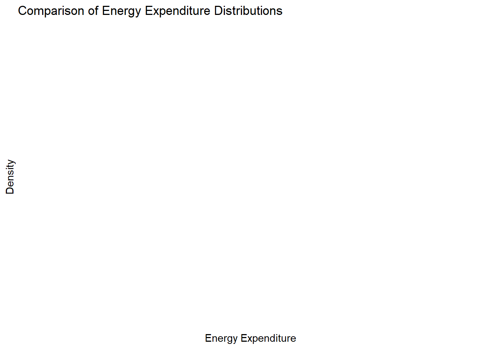

# Some comment that is not evaluated by R
some_variable <- some_function(some_object, some_parameter = TRUE)Armenia CCDR Microsimulation
1 Introduction
In this calculation file, we “age” the household survey according to demographic projections and different macroeconomic scenarios to explore the impact of climate-related risks and policy measures on the consumption expenditure distribution. It is part of a larger project with all contributions to Armenia’s CCDR, which can be downloaded from GitHub in the form of an Rstudio project.
As a convention, code is presented in the following format in this guide:
We assume that the reader has created an Rstudio project and is familiar with basic R functions. Within that project we recommend the following file structure:
root/
├── scripts
│ └── my_script.R
├── data/
| ├── my_data.sav
| ├── my_data.dta
| └── my_data.csv
└── output
├── my_output1.csv
└── my_output2.xlsxUsing RStudio project makes it possible to not use setwd() to establish the root directory and refer to subdirectories in a relative manner, making interoperability easier within teams and not hard coding a particular computer’s file structure into the code. If you are not using RStudio, just add setwd(r'(C:\My\path\to\project\root)') at the beginning of your coding session.
2 Preamble
We start with a clean environment, making sure that any objects from a previous session are not present. We take this opportunity to keep our country ISO code in a variable iso in case we need it later.
# Clean workspace
rm(list = ls())
# Armenia country ISO code
iso <- "ARM"
# Survey year
surveyyear <- 2022
# Exchange rate USD per dram
er <- 0.002310We call the appropriate libraries.
Rather than calling our libraries as we go, we will make sure we have everything we need from the beginning.
library(tidyverse) # includes dplyr, ggplot2 and others
library(haven) # to read SPSS and Stata datasets
library(readxl) # to read from MS-Excel
library(openxlsx) # to write to MS-Excel.
library(gt) # pretty tables
library(car) # companion to applied regression
library(modelr) # regression models
#library(anesrake)
# Raking reweighting but we don't load it, because
# it changes the meaning of summarize from dplyr,
# so we use the form anesrake::anesrake() when using it.
#library(ebal) # Entropy reweighting (not used)
library(janitor) # pretty subtotals
library(broom) # More regressions
library(purrr) # map vectors (aggregation)
library(zoo) # Calculate moving window average and max value
# Geopackages
library(sf) # to read and write shapefile maps
library(terra) # to perform geocalculations
library(tmap) # for static and interactive maps3 Datasets
We then load the datasets that we need for this study. The World Bank has processed some of these already for poverty analysis and so we have the original SPSS datasets with all variables for Households hh and for Individuals pp, as well as a consumption aggregate ca and a household income ic dataset, which are Stata datasets. This is for the year 2022. These are imported using the haven package. These are based on Armenia Integrated Living Conditions Survey 2022 (ARMSTAT, 2023).
# Households (hh)
hh <- read_sav(
"data/ARM-HH-survey/original-spss-files/ILCS-ARM-2022-Households.sav")
# Persons (pp)
pp <- read_sav(
"data/ARM-HH-survey/original-spss-files/ILCS-ARM-2022-Persons.sav")
# Consumption aggregate at household level (ca)
ca <- read_dta("data/ARM-HH-survey/CONSAGG2022.dta")
# Processed income at household level (ic)
ic <- read_dta("data/ARM-HH-survey/totinc.dta")
# Food diary
food_with_prices <- read_dta("data/ARM-HH-survey/FOOD_with_prices_short.dta")We will work non-destructively, meaning we will not rewrite these data sets and we will only create intermediate data frame objects from them to perform transformations, selections and other data management tasks. For example, we will keep household assignment to poverty status and consumption deciles handy by creating a subset of our ca data with only our household identifiers, deciles, and poverty.
# From the WB processed dataset, we extract deciles and poverty
deciles <- ca %>%
select( hhid, decile, poor_Avpovln2022,
poor_Foodpovln2022, poor_Lpovln2022, poor_Upovln2022)Our population data comes from UN’s projections.
population_projections <- read_dta("data/UN2022_population.dta") %>%
filter(country == iso) # we filter for ArmeniaThe macro scenario dataset is an input provided by the Macroeconomic CGE simulation team, with yearly information on GDP, working age population, employment by economic activity (for an aggregation of three sectors: agriculture, manufacturing, and services), wages by economic activity, value added by economic activity, remittances, consumer price index, food price index and energy price index (for a bundle of gas, oil, coal, electricity) by decile (10 representative households in the macro model), and carbon tax revenue transfers to household deciles.
scenario_file <- "data/ARM-Microsimulation/ARM_MacroScenarioInformation.xlsx"
scenario_varlist <- read_xlsx(
"data/ARM-Microsimulation/ARM_Macro_varlist.xlsx")
prices_2030 <-
read.csv("data/ARM-Microsimulation/prices2030.csv")Economic Activities in the Survey is in Armenian. The following dataset is a lookup table with the English names.
sectors <- read_xlsx("data/ARM-HH-survey/economic_activity_codes.xlsx")We also have geographical information for level 1 in Shapefile format, which we import with the sf package. We rename the column with the name of the administrative region to match our household survey data set conventions to ease mergers. The dplyr package from the tidyverse meta package allows us to “pipe” or link processing steps using the %>% pipe. Although there is no geoprocessing in this analysis, this will come in handy for graphical presentations.
# Armenia marzes or administrative level 1 shapefile
adm1 <- read_sf("data/ARM-Geodata/ARM-ADM1.shp") %>%
select(NAM_1, COD_HH_SVY, geometry) %>%
# Make sure that names match the rest of datasets
mutate(NAM_1 = if_else(NAM_1 == "Gergharkunik", "Gegharkunik", NAM_1))
# We rename with the survey designation
names(adm1)[2] <- "hh_02" And we plot it for reference in Figure 1. This is done with the tmap R package.
tm_shape(adm1)+
tm_polygons("NAM_1", legend.show = FALSE) +
tm_text("NAM_1", size = 3/4)
Marzes names are more accurate in the shapefile than in the survey. We will use them from here on instead of the survey factor labels.
hh <- hh %>%
left_join(adm1, join_by(hh_02 == hh_02)) %>%
select(-geometry)
ic <- ic %>%
left_join(adm1, join_by(hh_02 == hh_02)) %>%
select(-geometry)We also have an Excel file with changes to labor productivity due to climate variability. We bind together the datasets found in each Excel sheet.
file <- r"(data/ARM-Microsimulation/LaborProductivityChanges.xlsx)"
sheets <- excel_sheets(file)
# Use lapply to read and process each sheet
labor_productivity <- lapply(sheets, function(sheet) {
info <- read_excel(
file,
sheet = sheet,
col_names = TRUE,
col_types = c("text", "text", "numeric", "text", "numeric")
)
info$sector <- sheet
return(info)
})
# Bind all data frames in the list into a single data frame
labor_productivity <- bind_rows(labor_productivity)Finally, we have our climate vulnerability information. For this analysis we only use the crops_productivity and livestock_productivity.
crops_productivity <-
read.csv("data/ARM-Vulnerability-Analysis/ARM_crops_combined_REF_shock_admin1.csv") %>%
rename(NAM_1 = Province)
livestock_productivity <-
read.csv(
"data/ARM-Vulnerability-Analysis/ARM_livestock_REF_shock_admin1.csv"
) %>%
rename(NAM_1 = Province)4 Data preparation income outliers and missings
4.1 Household consumption aggregates and characteristics
Initial necessary variables. Some of these choices come from conventions used in the guidance code. However, where possible, we’ve tried to continue using the names found in the datasets to avoid introducing more confusion.
consumption_aggregates <- ca %>%
mutate(rural = ifelse(urb_rur == 2, 1, 0), # Create rural indicator
yhh = totc, # Total household expenditure
wgt_adj = pweight) %>% # Make a copy of the weight variable
select(hhid, rural, hhsize,hhsize_R, marz, aepc, yhh, wgt_adj, weight,
Foodpovln2022, Lpovln2022, Upovln2022, Avpovln2022,
poor_Foodpovln2022, poor_Lpovln2022, poor_Upovln2022,
poor_Avpovln2022, decile ) # Keep only necessary columns4.2 Demographic characteristics, education, labor force
Here the original code calls for Zone data, which is not present in our dataset, due to the different administrative structure of Armenia. However, we use hh_01_code (settlement) for this purpose. In the end, this variable was never used.
zone_data <- hh %>%
select(interview__key, hh_01_code, hh_02, hh_03, NAM_1) %>%
rename(
hhid = interview__key, # Household id
zone = hh_01_code, # Settlement
marz = hh_02, # Marz
NAM_1 = NAM_1, # Marz name
urb_rur = hh_03 # Urban / rural
)Demographic data, merge with zone data Note that ed_03 (educy) below is not years of education, but education level (primary, general, secondary, etc.) However, it is ordered in a way that higher levels imply more years of education. We perform several steps within the first pipe call. The variable lstatus (Labor Force Status) here is very important for the reweigthing of the dataset later on. Note that from here onwards we will be creating _microsim versions of our datasets with the transformations needed for calculations. That way we avoid changing our original data and can refer to it later without fearing we’ve left things behind.
pp_microsim <- pp %>%
rename(hhid = interview__key) %>%
left_join(zone_data, join_by(hhid == hhid)) %>%
mutate(
# Demographic characteristics
# Unique person id
pid = paste0(hhid, "-", str_pad(mem_001__id, 2, pad = "0")),
head = ifelse(mem_03 == 1, 1, 0),
# Education level
educy = ifelse(is.na(ed_03) | ed_03 == 8, 0, ed_03),
# Labor Force Status
lstatus = case_when(
# 1. Employed
est_03 == 1 | est_04 == 1 | est_05 == 1 |
est_06 == 1 | est_08 == 1 ~ 1L,
# 2. Unemployed (available, and searching)
est_10 == 1 ~ 2L,
# 3. Inactive (available, not searching)
est_10 == 2 ~ 3L,
# Out of the labor force
.default = 4L # Default to OLF
),
employed = (lstatus == 1),
# Salaried status (1. paid employee; 2 self-employed)
salaried = ifelse(
!is.na(emp_11a),
1L,
ifelse(is.na(emp_11a) &
employed == TRUE, 0L, NA_integer_)
)
) %>%
rename(rel = mem_03, # relationship to HH head
gender = mem_02,
age = mem_05)Later, when we conduct the reweighting of the dataset, we need to summarize into three levels of education.
pp_microsim <- pp_microsim %>%
mutate(calif = case_when(
educy >= 0 & educy <= 2 ~ "None - General",
educy > 3 & educy <= 7 ~ "Secondary - Vocational",
educy > 7 & educy <= 11 ~ "Higher +",
TRUE ~ NA_character_ # Values outside the specified ranges
))Count the number of employed persons by household. Note that it is necessary to explicitly tell R to ignore missing values(NA). This is different from Stata where 1 + .= 1 (where . is “missing”). In R 1 + NA = NA (where NA means “not available”). Not adding na.rm = TRUE to aggregation functions such as sum() in Listing 5 below will not throw an error and only provide a column with NA for households where at least one individidual has an employed status of NA.
pp_microsim <- pp_microsim %>%
mutate(employed = (lstatus == 1)) %>%
group_by(hhid) %>%
# Count within each household
mutate(employed_hh = sum(employed, na.rm = TRUE)) %>%
ungroup() Here the original Stata code calculates income variables and aggregates them by household. We skip that because the dataset ic already has these elements calculated by the WB poverty team. We’ll add them later as we need them.
However, as we’ll see later labor income information is heavily non-reported in the dataset. Labor income is a crucial step in merging the dataset with macroeconomic information and so we will predict income for those that do not report it below. These variables are related to labor income, amount and frequency, which we have to standardized to a monthly or yearly value.
Primary and Secondary Job income:
- emp_11 How much was %rostertitle%’s payment for wages/salary/income for last month?
- emp_12 What period of time was the wage/income for?
- emp_25 How much was %rostertitle%’s payment for wages/salary/income for last month?
- emp_26 What period of time was the wage/income for?
Bonus, In-Kind, and food from job was not asked in Armenia, If it were, you should add a mutate() statement like the ones below for each subcategory in Listing 6. We use coalesce(colname, 0) when adding the annual_labor_total again to prevent sums of NA’s. This function replaces a value with 0 within the calculation if it’s missing, but doesn’t change its value permanently.
pp_microsim <- pp_microsim %>%
# Labor income primary job
mutate(annual_labor_income_primary = case_when(
emp_12 == 1 ~ emp_11 * 365,
emp_12 == 2 ~ (emp_11/7) * 365, # Assuming weekly rate
emp_12 == 3 ~ (emp_11/14) * 365,
emp_12 == 4 ~ emp_11 * 12,
emp_12 == 5 ~ emp_11 * 2,
emp_12 == 6 ~ emp_11,
emp_12 == 7 ~ NA
)) %>%
# Labor income secondary job
mutate(annual_labor_income_secondary = case_when(
emp_26 == 1 ~ emp_25 * 365,
emp_26 == 2 ~ (emp_25/7) * 365, # Assuming weekly rate
emp_26 == 3 ~ (emp_25/14) * 365,
emp_26 == 4 ~ emp_25 * 12,
emp_26 == 5 ~ emp_25 * 2,
emp_26 == 6 ~ emp_25,
emp_26 == 7 ~ NA
)) %>%
# Annual labor total in thousands of dram
mutate(annual_labor_total =
(coalesce(annual_labor_income_primary, 0) +
coalesce(annual_labor_income_secondary, 0))/1000)
# Restore annual_labor_total to NA if both NA
pp_microsim <- pp_microsim %>%
mutate(annual_labor_total =
if_else(
is.na(annual_labor_income_primary)
& is.na(annual_labor_income_secondary),
NA,
annual_labor_total))Now we need to check the share of individuals that are employed, but did not report income. This is done in Listing 7 below.
total_employed_no_income <- pp_microsim %>%
filter(employed == TRUE & is.na(annual_labor_total)) %>%
nrow()
total_employed <- pp_microsim %>%
filter(employed == TRUE) %>%
nrow()
percent_employed_no_income <- (total_employed_no_income / total_employed) * 100
print(
paste0(
"There is ",
format(
percent_employed_no_income,digits = 2, nsmall=2
),
"% of the employed population that reports no income.")
)[1] "There is 28.57% of the employed population that reports no income."We also need to mark income outliers as those with incomes outside 5 standard deviations.
pp_microsim <- pp_microsim %>%
mutate(
sd = sd(annual_labor_total, na.rm = TRUE), # Calculate standard deviation
d = annual_labor_total / sd,
# Combined outlier condition
outlier = (d > 5) | (employed == TRUE & annual_labor_total == 0),
# Mark potential missings
missings = if_else(employed == TRUE, is.na(annual_labor_total), NA)
) Economic sector. The economic sectors dataset contains a lookup table for sector aggregation which we add to the pp_microsim database in Listing 8.
pp_microsim <- pp_microsim %>%
mutate(emp_04 = as.integer(emp_04)) %>%
left_join(sectors, join_by("emp_04" == "economic_activity_code") ) %>%
rename(sector = ea_shortcode)Impute sector for those with missing employed by hh head sector.
pp_microsim <- pp_microsim %>%
group_by(hhid) %>%
mutate(
# Create a temporary variable 'other_sector'
# which captures the sector of any employed
# individual in the household
other_sector =
if_else(employed == TRUE & !is.na(sector), sector, NA_real_)
) %>%
# Use 'fill' to propagate 'other_sector' values within the household
fill(other_sector, .direction = "downup") %>%
mutate(
# Impute missing 'sector' values based on the 'other_sector'
sector =
if_else(is.na(sector) & employed == TRUE, other_sector, sector)
) %>%
# Drop the temporary 'other_sector' variable
select(-other_sector) %>%
ungroup()We then assign a specific value for missing sectors for those employed with no one else in the hh to assign value. We select services as it’s the heaviest sector in the dataset (we do it like this, instead of say, any matching technique, because it’s only 2 observations).
pp_microsim <- pp_microsim %>%
mutate(sector = if_else(is.na(sector) & employed == TRUE, 3, sector))We provide value labels for sector factors.
pp_microsim <- pp_microsim %>%
mutate(sector_name = factor(sector, levels = c(1, 2, 3),
labels = c("Agriculture",
"Manufacturing",
"Services")))We make sure that those outside the labor force (OLF) do not report a sector, which we replace with NA for those who meet the condition.
pp_microsim <- pp_microsim %>%
mutate(lstatus = as.numeric(lstatus),
sector =
if_else(lstatus == 4,
as.character(NA),
as.character(sector)),
industry = as.factor(sector)) %>%
# We need this for reweighting and
# not messing up the regression below.
mutate(sector_w = sector)4.3 The regression
Since labor income was a key variable, which we needed to match with the future wage bill by economic activity, we first checked for missing values among employed individuals. We found that almost a third of respondents (28.6%) did not report income for either their primary or secondary job. To overcome this limitation, we used the available information from the remaining respondents to estimate an extended Mincer equation where the dependent variable is the natural logarithm of labor income (lnlab) and the independent variables include age, gender, education (educy), the square of age (age2), the region (marz), and the sector of employment (sector), which could take three factors: agriculture, manufacturing or services. For the respondents with available information, we also identified outliers as those outside of five standard deviations from the mean labor income. The formula is shown below.
\[ \ln(lab_i) = \beta_0 + \beta_1 \text{age}_i + \beta_2 \text{gender}_i + \beta_3 \text{educy}_i + \beta_4 \text{age}^2_i + \beta_5 \text{marz}_i + \beta_6 \text{sector}_i + \epsilon_i \]
Where:
- \(\ln(lab_i)\) is the natural logarithm of labor income for individual \(i\).
- \(\beta_0\) is the intercept term.
- \(\beta_1, \beta_2, \beta_3, \beta_4, \beta_5, \beta_6\) are the coefficients for the respective independent variables.
- \(\text{age}_i\) is the age of individual \(i\).
- \(\text{gender}_i\) is a binary variable indicating the gender of individual \(i\) (1 for male, 2 for female).
- \(\text{educy}_i\) represents the level of education for individual \(i\) (ordered: 1) None to General, 2) Secondary to Vocational, 3) Higher education).
- \(\text{age}^2_i\) is the square of the age of individual \(i\), included to capture non-linear effects of age on labor income.
- \(\text{marz}_i\) represents the region where individual \(i\) resides.
- \(\text{sector}_i\) represents the sector of employment for individual \(i\) (i.e., agriculture, manufacturing or services).
- \(\epsilon_i\) is the error term for individual \(i\).
We first prepare our variables for the regression.
pp_microsim <- pp_microsim %>%
mutate(
educy2 = educy^2,
age2 = age^2,
male = case_when(
gender == 1 ~ 1,
gender == 2 ~ 0
),
lnlab = log(annual_labor_total),
simuli = NA_real_ # Initialize simuli
)Filter the data for regression conditions.
regression_data <- pp_microsim %>%
filter(employed == TRUE & outlier == FALSE & missings == FALSE)Regression model.
model <- lm(lnlab ~ age + gender + educy + age2 + marz + sector,
data = regression_data)Predict for specific conditions
pp_microsim <- pp_microsim %>%
mutate(
condition = (lstatus == 1 & (outlier == TRUE | missings == TRUE))
)Applying predictions.
Note: The ‘predict’ function in R does not directly support conditions within the function call, so we handle this by filtering or subsetting the data as needed.
temp2 equivalent - Note: ‘type = “response”’ might be needed depending on model type.
pp_microsim$simuli[pp_microsim$condition==TRUE] <- exp(
predict(model, pp_microsim[pp_microsim$condition==TRUE, ], type = "response"))Handling negative values in ‘simuli’.
pp_microsim <- pp_microsim %>%
mutate(
simuli = if_else(simuli < 0, 0, simuli)
)There were 8 observations that met the criteria:
We will replace annual_labor_total with this value for those observations.
pp_microsim <- pp_microsim %>%
mutate(annual_labor_total = if_else(
employed == TRUE & (outlier == TRUE | missings == TRUE),
simuli, annual_labor_total))
# And get monthly incomes for everyone
pp_microsim <- pp_microsim %>%
mutate(monthly_labor_income = annual_labor_total / 12)Merging datasets.
pp_microsim <- pp_microsim %>%
left_join(consumption_aggregates, by = "hhid")5 UN Population Projections
Now we are ready to move to our demographic projections and macroeconomic model information.
First, filtering based on country (our iso variable).
population_projections <- population_projections %>%
filter(country == iso)Collapsing data by summing up variables starting with “yf” and “ym” and reshaping data to long format.
population_projections <- population_projections %>%
group_by(Variant, country, cohort) %>%
summarize(across(starts_with(c("yf", "ym")), sum)) %>%
ungroup()`summarise()` has grouped output by 'Variant', 'country'. You can override
using the `.groups` argument.population_projections <- pivot_longer(population_projections,
cols = starts_with(c("yf", "ym")),
names_to = c(".value", "year"),
names_pattern = "(yf|ym)(.*)")Creating new variable total_population as the sum of yf and ym. Dropping country variables.
population_projections <- population_projections %>%
mutate(total_population = yf + ym) %>%
select( -country) %>%
mutate(year = as.numeric(year))Summarizing the year to find the range.
minyear <- surveyyear # Make sure `surveyyear` is correctly defined
maxyear <- max(as.numeric(population_projections$year))
# Print the year range as a check
print(paste("Min Year:", minyear, "- Max Year:", maxyear))[1] "Min Year: 2022 - Max Year: 2100"# With minyear and maxyear defined above
# Initialize a list to store growth data
pop_growth <- list()
# Loop over variants
variants <- unique(population_projections$Variant)
for (variant in variants) {
for (t in minyear:maxyear) {
# Calculate population for year t
pop_t <- population_projections %>%
filter(year == t, Variant == variant) %>%
summarize(sum_pop = sum(total_population)) %>%
pull(sum_pop)
# Calculate population for base year
pop_base <- population_projections %>%
filter(year == minyear, Variant == variant) %>%
summarize(sum_pop = sum(total_population)) %>%
pull(sum_pop)
# Calculate growth rate and store in list with dynamic naming
growth_rate <- pop_t / pop_base
pop_growth[[paste0(t, "_", variant)]] <- list(
growth_rate = growth_rate, pop_t = pop_t
)
}
}
# Convert list to dataframe
pop_growth <- do.call(rbind, lapply(names(pop_growth), function(x) {
# Extract year and variant from the name
parts <- unlist(strsplit(x, "_"))
year <- as.integer(parts[1])
variant <- parts[2]
# Create a tibble for each entry
tibble(year = year,
variant = variant,
total_population = pop_growth[[x]]$pop_t,
pop_growth_rate = pop_growth[[x]]$growth_rate)
}))
# Arrange the dataframe for better readability
pop_growth <- arrange(pop_growth, variant, year)
# Display the first few rows of the dataframe
pop_growth[c(1:09),]# A tibble: 9 × 4
year variant total_population pop_growth_rate
<int> <chr> <dbl> <dbl>
1 2022 Constant-fertility 2780. 1
2 2023 Constant-fertility 2778. 0.999
3 2024 Constant-fertility 2778. 0.999
4 2025 Constant-fertility 2776. 0.998
5 2026 Constant-fertility 2774. 0.998
6 2027 Constant-fertility 2770. 0.996
7 2028 Constant-fertility 2766. 0.995
8 2029 Constant-fertility 2761. 0.993
9 2030 Constant-fertility 2755. 0.991We load elasticities.
elasticities <- c(0.82, 0.9, 0.79) # Agr, Manuf, Services
yearsto <- c(2030)6 Macro Scenarios
The following code accomplishes the following:
- Import data from Excel sheets corresponding to each scenario and combine them into one data frame.
- Rename columns, create a ‘scenid’ to identify scenarios, and merge with population projections.
- Calculate real wages and consumption per capita.
# Macro Scenario File imported in "Datasets" section (scenario_file)
sheets <- excel_sheets(scenario_file)
scenario_sheets <- sheets[c(1,2,3)]
# Define the names of the scenarios and the variants
# modify list with the tab numbers in the Excel file
scenarios <- scenario_sheets %>%
# Convert all text to lowercase
str_to_lower() %>%
# Replace all spaces and hyphens with underscores
str_replace_all("[ -]", "_") %>%
# Remove the word 'scenario' or 'scenarios'
str_remove_all("scenario?s?") %>%
# Remove leading and trailing underscores
str_replace_all("^_+|_+$", "")
# Create an empty list to store data frames for each scenario
scen_data_list <- list()
# Import data for each scenario and store it in the list
for (i in seq_along(scenarios)) {
sheet_data <- read_excel(scenario_file,
sheet = scenario_sheets[i],
range = "B3:AT31",
col_names = FALSE)
sheet_data$scenario_id <- scenarios[i]
colnames(sheet_data) <- scenario_varlist$var_short_name
scen_data_list[[i]] <- sheet_data
}New names:
New names:
New names:
• `` -> `...1`
• `` -> `...2`
• `` -> `...3`
• `` -> `...4`
• `` -> `...5`
• `` -> `...6`
• `` -> `...7`
• `` -> `...8`
• `` -> `...9`
• `` -> `...10`
• `` -> `...11`
• `` -> `...12`
• `` -> `...13`
• `` -> `...14`
• `` -> `...15`
• `` -> `...16`
• `` -> `...17`
• `` -> `...18`
• `` -> `...19`
• `` -> `...20`
• `` -> `...21`
• `` -> `...22`
• `` -> `...23`
• `` -> `...24`
• `` -> `...25`
• `` -> `...26`
• `` -> `...27`
• `` -> `...28`
• `` -> `...29`
• `` -> `...30`
• `` -> `...31`
• `` -> `...32`
• `` -> `...33`
• `` -> `...34`
• `` -> `...35`
• `` -> `...36`
• `` -> `...37`
• `` -> `...38`
• `` -> `...39`
• `` -> `...40`
• `` -> `...41`
• `` -> `...42`
• `` -> `...43`
• `` -> `...44`
• `` -> `...45`# Combine all data frames into one
combined_data <- bind_rows(scen_data_list)
# Rename population_m from the data set because we will use
# UN pop projections from the other data set.
combined_data <- combined_data %>%
rename(population_m_macrodata = population_m)
# Calculate real wages
combined_data <- combined_data %>%
mutate(rwage_agr_m_amd = wage_agr_m_amd / cpi,
rwage_man_m_amd = wage_man_m_amd / cpi,
rwage_ser_m_amd = wage_ser_m_amd / cpi)
pop_data <- population_projections %>%
group_by(Variant, year) %>%
summarize(female = sum(yf),
male = sum(ym),
total_population = sum(total_population) ) %>%
ungroup()`summarise()` has grouped output by 'Variant'. You can override using the
`.groups` argument.# Filter population data to macro model years
pop_data <- pop_data %>%
filter(year <= max(combined_data$year),
Variant == variants[7])
# Merge the combined data with population projections
macro_data <- combined_data %>%
left_join(pop_data, by = c("year"))
# Calculate consumption per capita and other totals
macro_data <- macro_data %>%
mutate(
consumption_pc = consumption_b_amd / (total_population),
total_employment = lab_agr_1000p + lab_man_1000p + lab_ser_1000p,
employment_rate = working_age_pop_m / total_population
)
# Function to add growth rate columns directly in the dataframe
calculate_growth <- function(data, value_column) {
growth_col_name <- paste0(value_column, "_growth") # dynamic name for growth column
data %>%
arrange(year) %>%
group_by(Variant, scenario_id) %>%
mutate(
base_value = first(!!sym(value_column)),
!!sym(growth_col_name) := !!sym(value_column) / base_value
) %>%
select(-base_value) %>% # optionally remove base_value column if not needed
ungroup()
}
# Columns to calculate growth for
value_columns <- c(
"gdp_b_amd", # GDP
"consumption_b_amd", # Consumption
"consumption_pc", # Consumption PC
"remittances_b_amd", # Remittances
"total_employment", # Employment
"employment_rate", # Employment rate
"working_age_pop_m", # Working age population
"va_agr_b_amd", # Value added agriculture
"va_man_b_amd", # Value added manufacturing
"va_ser_b_amd", # Value added services
"wage_agr_m_amd", # Nominal wage agriculture
"wage_man_m_amd", # Nominal wage manufacturing
"wage_ser_m_amd", # Nominal wage services
"rwage_agr_m_amd", # Real wage agriculture
"rwage_man_m_amd", # Real wage manufacturing
"rwage_ser_m_amd" # Real wage services
)
# Applying the growth calculation to the macro_data for each column
for (col in value_columns) {
macro_data <- calculate_growth(macro_data, col)
}
# Now `macro_data` will have growth rate columns for each of the variables listed
# We rearrange the dataset for clarity
macro_data <- macro_data %>%
relocate(scenario_id, Variant, .before = year) %>%
arrange(scenario_id, Variant, year)
# write.table(macro_data, "clipboard", sep="\t", row.names=FALSE)7 Reweighting of the dataset
7.1 Aggregation of population data
This is based on a custom command to reweight the survey according to macroeconomic data for every possible combination of variant, year, and country. In the macro data we know they only used the “medium” variant and we only need to reweight for a specific year (2030) for Armenia (ARM), so we will conduct the reweighting directly with these parameters.
# We join several cohorts from 0 to 29 years old and from
# 60 onwards, because the reweighting procedure works
# best if each category is at least 5% of the population
# The solution here works best for Armenia.
population_projections <- population_projections %>%
# filter(Variant == "Medium") %>%
# Recoding cohorts into ordered factors
mutate(cohort_short = factor(case_when(
cohort %in% c("P0004", "P0509","P1014",
"P1519","P2024", "P2529") ~ "P0029",
cohort %in% c("P3034", "P3539") ~ "P3039",
cohort %in% c("P4044", "P4549") ~ "P4049",
cohort %in% c("P5054", "P5559") ~ "P5059",
cohort %in% c("P6064", "P6569","P7074", "P7579",
"P8084", "P8589", "P9094", "P9599",
"P100up") ~ "P60up"
), levels = c("P0029", "P3039",
"P4049", "P5059", "P60up"))) %>%
# Convert factor 'cohort' to numeric codes
mutate(cohort_code = as.integer(cohort_short))
# Checking the resulting dataset
print(pop_data)# A tibble: 60 × 5
Variant year female male total_population
<chr> <dbl> <dbl> <dbl> <dbl>
1 Medium 1991 1867. 1750. 3618.
2 Medium 1992 1850. 1724. 3575.
3 Medium 1993 1799. 1658. 3457.
4 Medium 1994 1763. 1610. 3374.
5 Medium 1995 1741. 1581. 3323.
6 Medium 1996 1731. 1568. 3299.
7 Medium 1997 1719. 1552. 3271.
8 Medium 1998 1705. 1535. 3241.
9 Medium 1999 1689. 1517. 3206.
10 Medium 2000 1672. 1496. 3169.
# ℹ 50 more rowsLet’s now create cohorts in our pp_microsim data to match our population projection data.
# Convert 'age' into 'cohort' factor with levels ordered as specified
pp_microsim <- pp_microsim %>%
mutate(cohort = factor(case_when(
age >= 0 & age <= 29 ~ "P0029",
age >= 30 & age <= 39 ~ "P3039",
age >= 40 & age <= 49 ~ "P4049",
age >= 50 & age <= 59 ~ "P5059",
age >= 60 ~ "P60up"
), levels = c("P0029", "P3039", "P4049", "P5059", "P60up")))
# Convert the 'cohort' and 'gender' factor to numeric codes
pp_microsim <- pp_microsim %>%
mutate(cohort_code = as.integer(cohort)) %>%
mutate(gender_code = as.integer(gender))We also need demographic targets for 2030
# Ensure pop_targets_2030 is correctly prepared
# We use the "Medium" variant = variants[7]
pop_targets_2030 <- population_projections %>%
filter(year == 2030, Variant == variants[7]) %>%
group_by(cohort_code, cohort_short) %>%
summarize(female = sum(yf),
male = sum(ym),
total = sum(total_population),
) %>%
ungroup()`summarise()` has grouped output by 'cohort_code'. You can override using the
`.groups` argument.pop_total <- sum(pop_targets_2030$total)
pop_targets_2030 <- pop_targets_2030 %>%
mutate(pct_total = total / pop_total)
#writeClipboard(pop_targets_2030)
# write.table(pop_targets_2030, "clipboard", sep="\t", row.names=FALSE)And economic targets from our macroeconomic scenario data. We deal with this later. Should come back to fix this so we can automate.
# economic_targets_2030 <- macro_data %>%
# filter(year == 2030, Variant == "Medium", scenario_id == "baseline") %>%
# summarize(
# target_lab_agr = sum(lab_agr_1000p * 1000),
# target_lab_man = sum(lab_man_1000p * 1000),
# target_lab_ser = sum(lab_ser_1000p * 1000)
# )For a better representation of the labor market, we will take into account the combination between labor status and economic sector of the employed and adjust that combination according to the macrodata so that we can accurately model changes in total employment, sector distribution of the employed and overall population changes.
pp_microsim <- pp_microsim %>%
mutate(lmarket = case_when(
lstatus == 1 & sector_w == 1 ~ 1, # Agriculture
lstatus == 1 & sector_w == 2 ~ 2, # Manufactures
lstatus == 1 & sector_w == 3 ~ 3, # Services
lstatus == 2 & is.na(sector_w) ~ 4, # Unemployed
lstatus == 3 & is.na(sector_w) ~ 4, # Unemployed
lstatus == 4 & is.na(sector_w) ~ 5, # OLF
))Note that the differences between the totals of the survey and the macro file for the base year are very much different. We’ll adjust the survey only with relative growth instead of total numbers so that labor income doesn’t change completely.
7.2 Reweigting
We use anesrake to calculate targets from known future proportions of sex, age, economic sector. We first create a target list.
# Target for each variable
gender_code <- c(
sum(pop_targets_2030$male) /
(sum(pop_targets_2030$male)+ sum(pop_targets_2030$female)),
sum(pop_targets_2030$female) /
(sum(pop_targets_2030$male)+ sum(pop_targets_2030$female)))
cohort_code <- pop_targets_2030$pct_total
# Four digits are better than two in this case, raking is quite accurate.
lmarket_baseline <- c(0.1342, 0.0494, 0.2611, 0.2473, 0.3080)
lmarket_dry_hot <- c(0.1369, 0.0489, 0.2593, 0.2473, 0.3076)
lmarket_nzs <- c(0.1251, 0.0516, 0.2623, 0.2516, 0.3094)
# Note how similar the scenarios are
# Target list baseline
targets_baseline <- list(gender_code
, cohort_code
, lmarket_baseline
)
names(targets_baseline) <- c("gender_code",
"cohort_code",
"lmarket"
)
# Target list Dry/Hot
targets_dry_hot <- list(gender_code
, cohort_code
, lmarket_dry_hot
)
names(targets_dry_hot) <- c("gender_code",
"cohort_code",
"lmarket"
)
# Target list NZS
targets_nzs <- list(gender_code
, cohort_code
, lmarket_nzs
)
names(targets_nzs) <- c("gender_code",
"cohort_code",
"lmarket"
)And now we perform the reweighting, using the original weights. Initially we had used the default option type = “pctlim” combined with pctlim=0.05, because the method recommends that if reweighting changes for one variable according to its target are not of at least 5%, then it’s not worth burdening the procedure with it. It then ignored sex as a reweighting variable, leaving a small percentage difference between the target and the final population. However, we then tried removing this limitation and the procedure reached convergence in 33 iterations very efficiently.
# Since this uses base R, we need to turn the data frame into base R object
rakedata <- as.data.frame(pp_microsim)
anesrake::anesrakefinder(targets_baseline, rakedata, choosemethod = "total")gender_code cohort_code lmarket
0.03626510 0.09677000 0.07172418 outsave <- anesrake::anesrake(targets_baseline,
rakedata,
caseid = rakedata$pid,
#verbose = FALSE,
choosemethod = "total",
#type = "pctlim",
type = "nolim",
#cap = 100,
#pctlim = 0.05,
nlim = 3,
iterate = TRUE,
force1 = TRUE,
verbose = TRUE,
weightvec = rakedata$weight)[1] "Raking...Iteration 1"
[1] "Current iteration changed total weights by 2361.17708851471"
[1] "Raking...Iteration 2"
[1] "Current iteration changed total weights by 343.154685460483"
[1] "Raking...Iteration 3"
[1] "Current iteration changed total weights by 50.282147123565"
[1] "Raking...Iteration 4"
[1] "Current iteration changed total weights by 15.5324150051193"
[1] "Raking...Iteration 5"
[1] "Current iteration changed total weights by 4.9125427648284"
[1] "Raking...Iteration 6"
[1] "Current iteration changed total weights by 1.55433042098091"
[1] "Raking...Iteration 7"
[1] "Current iteration changed total weights by 0.491570475878754"
[1] "Raking...Iteration 8"
[1] "Current iteration changed total weights by 0.15548860353216"
[1] "Raking...Iteration 9"
[1] "Current iteration changed total weights by 0.0491861537407502"
[1] "Raking...Iteration 10"
[1] "Current iteration changed total weights by 0.0155594639669022"
[1] "Raking...Iteration 11"
[1] "Current iteration changed total weights by 0.00492206801523239"
[1] "Raking...Iteration 12"
[1] "Current iteration changed total weights by 0.0015570434063234"
[1] "Raking...Iteration 13"
[1] "Current iteration changed total weights by 0.000492553986909977"
[1] "Raking...Iteration 14"
[1] "Current iteration changed total weights by 0.00015581417334512"
[1] "Raking...Iteration 15"
[1] "Current iteration changed total weights by 4.92901435997922e-05"
[1] "Raking...Iteration 16"
[1] "Current iteration changed total weights by 1.55924099685123e-05"
[1] "Raking...Iteration 17"
[1] "Current iteration changed total weights by 4.9324913638793e-06"
[1] "Raking...Iteration 18"
[1] "Current iteration changed total weights by 1.56034048766351e-06"
[1] "Raking...Iteration 19"
[1] "Current iteration changed total weights by 4.93596604533852e-07"
[1] "Raking...Iteration 20"
[1] "Current iteration changed total weights by 1.56144157131832e-07"
[1] "Raking...Iteration 21"
[1] "Current iteration changed total weights by 4.93947955038099e-08"
[1] "Raking...Iteration 22"
[1] "Current iteration changed total weights by 1.56252071836782e-08"
[1] "Raking...Iteration 23"
[1] "Current iteration changed total weights by 4.94344779000677e-09"
[1] "Raking...Iteration 24"
[1] "Current iteration changed total weights by 1.56241772297783e-09"
[1] "Raking...Iteration 25"
[1] "Current iteration changed total weights by 4.95822036206128e-10"
[1] "Raking...Iteration 26"
[1] "Current iteration changed total weights by 1.56211973911802e-10"
[1] "Raking...Iteration 27"
[1] "Current iteration changed total weights by 5.09479958221704e-11"
[1] "Raking...Iteration 28"
[1] "Current iteration changed total weights by 1.42659634105868e-11"
[1] "Raking...Iteration 29"
[1] "Current iteration changed total weights by 6.37030705963326e-12"
[1] "Raking...Iteration 30"
[1] "Current iteration changed total weights by 2.28768393117917e-12"
[1] "Raking...Iteration 31"
[1] "Current iteration changed total weights by 2.2706836411146e-12"
[1] "Raking converged in 31 iterations"summary(outsave)$convergence
[1] "Complete convergence was achieved after 31 iterations"
$base.weights
[1] "Using Base Weights Provided"
$raking.variables
[1] "gender_code" "cohort_code" "lmarket"
$weight.summary
Min. 1st Qu. Median Mean 3rd Qu. Max.
0.1034 0.6700 0.9288 1.0000 1.2682 3.3858
$selection.method
[1] "variable selection conducted using _nolim_ - discrepancies selected using _total_."
$general.design.effect
[1] 1.244831
$gender_code
Target Old Weights N Old Weights % Wtd N Wtd % Change in %
<NA> 0.4514133 NA NA NA NA NA
<NA> 0.5485867 NA NA NA NA NA
Total 1.0000000 0 0 0 0 0
Resid. Disc. Orig. Disc.
<NA> NA NA
<NA> NA NA
Total 0 0
$cohort_code
Target Old Weights N Old Weights % Wtd N Wtd % Change in %
<NA> 0.3638899 NA NA NA NA NA
<NA> 0.1420277 NA NA NA NA NA
<NA> 0.1630905 NA NA NA NA NA
<NA> 0.1042513 NA NA NA NA NA
<NA> 0.2267405 NA NA NA NA NA
Total 1.0000000 0 0 0 0 0
Resid. Disc. Orig. Disc.
<NA> NA NA
<NA> NA NA
<NA> NA NA
<NA> NA NA
<NA> NA NA
Total 0 0
$lmarket
Target Old Weights N Old Weights % Wtd N Wtd % Change in % Resid. Disc.
<NA> 0.1342 NA NA NA NA NA NA
<NA> 0.0494 NA NA NA NA NA NA
<NA> 0.2611 NA NA NA NA NA NA
<NA> 0.2473 NA NA NA NA NA NA
<NA> 0.3080 NA NA NA NA NA NA
Total 1.0000 0 0 0 0 0 0
Orig. Disc.
<NA> NA
<NA> NA
<NA> NA
<NA> NA
<NA> NA
Total 0# add weights to the dataset
rakedata$weight_2030_baseline <- unlist(outsave[1])
n <- length(rakedata$sector)
# Calculate the sum of original weights
original_weight_sum <- sum(rakedata$weight)
# # Target scaling for original weights
original_weight_scaling_factor <-
pop_data$total_population[pop_data$year == 2030] /
pop_data$total_population[pop_data$year == 2022]
# Scaled original weights
original_weight_sum <- (original_weight_sum
* original_weight_scaling_factor)
# Calculate the sum of the new weights
new_weight_sum <- sum(rakedata$weight_2030_baseline)
# Scale the new weights to match the sum of the original weights
scaling_factor <- original_weight_sum / new_weight_sum
rakedata$weight_2030_baseline <- rakedata$weight_2030_baseline * scaling_factor
# Verify the adjustment
head(rakedata[, c("weight", "weight_2030_baseline")]) weight weight_2030_baseline
1 185.7685 175.0700
2 185.7685 188.2168
3 122.7176 101.5832
4 185.7685 191.8185
5 326.8796 264.5755
6 326.8796 337.5253summary(rakedata$weight_2030_baseline) Min. 1st Qu. Median Mean 3rd Qu. Max.
15.87 102.86 142.59 153.52 194.69 519.78 summary(rakedata$weight) Min. 1st Qu. Median Mean 3rd Qu. Max.
21.48 109.82 156.33 154.68 192.16 326.88 hh_size <- rakedata %>%
select(hhid, hhsize) %>%
mutate(ones = 1,
hhsize_old = hhsize) %>%
group_by(hhid) %>%
summarize(hhsize = sum(ones, na.rm = TRUE)) %>%
ungroup()
rakedata <- rakedata %>%
rename(hhsize_old = hhsize) %>%
left_join(hh_size, join_by(hhid)) %>%
relocate(weight, .before = weight_2030_baseline) %>%
mutate(hh_weight_2030_baseline = weight_2030_baseline / hhsize)
pp_microsim <- tibble(rakedata)
rm(rakedata)We now do the Dry/Hot Scenario. The efficient way of doing this is through a loop or sapply, but as we’re strapped for time we will just repeat the code. (Needs rework.)
# Since this uses base R, we need to turn the data frame into base R object
rakedata <- as.data.frame(pp_microsim)
anesrake::anesrakefinder(targets_dry_hot, rakedata, choosemethod = "total")gender_code cohort_code lmarket
0.03626510 0.09677000 0.06632418 outsave <- anesrake::anesrake(targets_dry_hot,
rakedata,
caseid = rakedata$pid,
#verbose = FALSE,
choosemethod = "total",
#type = "pctlim",
type = "nolim",
#cap = 100,
#pctlim = 0.05,
nlim = 3,
iterate = TRUE,
force1 = TRUE,
verbose = TRUE,
weightvec = rakedata$weight)[1] "Raking...Iteration 1"
[1] "Current iteration changed total weights by 2346.39562345486"
[1] "Raking...Iteration 2"
[1] "Current iteration changed total weights by 325.326676946962"
[1] "Raking...Iteration 3"
[1] "Current iteration changed total weights by 47.6038687445994"
[1] "Raking...Iteration 4"
[1] "Current iteration changed total weights by 14.7805325726215"
[1] "Raking...Iteration 5"
[1] "Current iteration changed total weights by 4.67536358935004"
[1] "Raking...Iteration 6"
[1] "Current iteration changed total weights by 1.48066518168051"
[1] "Raking...Iteration 7"
[1] "Current iteration changed total weights by 0.468649510562274"
[1] "Raking...Iteration 8"
[1] "Current iteration changed total weights by 0.148353295202568"
[1] "Raking...Iteration 9"
[1] "Current iteration changed total weights by 0.046965177901018"
[1] "Raking...Iteration 10"
[1] "Current iteration changed total weights by 0.0148683286004776"
[1] "Raking...Iteration 11"
[1] "Current iteration changed total weights by 0.00470705840641751"
[1] "Raking...Iteration 12"
[1] "Current iteration changed total weights by 0.00149017464214521"
[1] "Raking...Iteration 13"
[1] "Current iteration changed total weights by 0.000471763960322724"
[1] "Raking...Iteration 14"
[1] "Current iteration changed total weights by 0.000149352453236176"
[1] "Raking...Iteration 15"
[1] "Current iteration changed total weights by 4.72824469837235e-05"
[1] "Raking...Iteration 16"
[1] "Current iteration changed total weights by 1.49688183763291e-05"
[1] "Raking...Iteration 17"
[1] "Current iteration changed total weights by 4.7388742776544e-06"
[1] "Raking...Iteration 18"
[1] "Current iteration changed total weights by 1.50024780687374e-06"
[1] "Raking...Iteration 19"
[1] "Current iteration changed total weights by 4.74952141560347e-07"
[1] "Raking...Iteration 20"
[1] "Current iteration changed total weights by 1.50361528755694e-07"
[1] "Raking...Iteration 21"
[1] "Current iteration changed total weights by 4.76025212442499e-08"
[1] "Raking...Iteration 22"
[1] "Current iteration changed total weights by 1.50707414187101e-08"
[1] "Raking...Iteration 23"
[1] "Current iteration changed total weights by 4.77042699786878e-09"
[1] "Raking...Iteration 24"
[1] "Current iteration changed total weights by 1.50992897351987e-09"
[1] "Raking...Iteration 25"
[1] "Current iteration changed total weights by 4.77459433101401e-10"
[1] "Raking...Iteration 26"
[1] "Current iteration changed total weights by 1.5339025882799e-10"
[1] "Raking...Iteration 27"
[1] "Current iteration changed total weights by 4.58121596214056e-11"
[1] "Raking...Iteration 28"
[1] "Current iteration changed total weights by 1.52340223769087e-11"
[1] "Raking...Iteration 29"
[1] "Current iteration changed total weights by 6.39277519809411e-12"
[1] "Raking...Iteration 30"
[1] "Current iteration changed total weights by 1.47665213390269e-12"
[1] "Raking...Iteration 31"
[1] "Current iteration changed total weights by 4.05270261794044e-12"
[1] "Raking converged in 31 iterations"summary(outsave)$convergence
[1] "Complete convergence was achieved after 31 iterations"
$base.weights
[1] "Using Base Weights Provided"
$raking.variables
[1] "gender_code" "cohort_code" "lmarket"
$weight.summary
Min. 1st Qu. Median Mean 3rd Qu. Max.
0.1032 0.6669 0.9316 1.0000 1.2685 3.3775
$selection.method
[1] "variable selection conducted using _nolim_ - discrepancies selected using _total_."
$general.design.effect
[1] 1.243531
$gender_code
Target Old Weights N Old Weights % Wtd N Wtd % Change in %
<NA> 0.4514133 NA NA NA NA NA
<NA> 0.5485867 NA NA NA NA NA
Total 1.0000000 0 0 0 0 0
Resid. Disc. Orig. Disc.
<NA> NA NA
<NA> NA NA
Total 0 0
$cohort_code
Target Old Weights N Old Weights % Wtd N Wtd % Change in %
<NA> 0.3638899 NA NA NA NA NA
<NA> 0.1420277 NA NA NA NA NA
<NA> 0.1630905 NA NA NA NA NA
<NA> 0.1042513 NA NA NA NA NA
<NA> 0.2267405 NA NA NA NA NA
Total 1.0000000 0 0 0 0 0
Resid. Disc. Orig. Disc.
<NA> NA NA
<NA> NA NA
<NA> NA NA
<NA> NA NA
<NA> NA NA
Total 0 0
$lmarket
Target Old Weights N Old Weights % Wtd N Wtd % Change in % Resid. Disc.
<NA> 0.1369 NA NA NA NA NA NA
<NA> 0.0489 NA NA NA NA NA NA
<NA> 0.2593 NA NA NA NA NA NA
<NA> 0.2473 NA NA NA NA NA NA
<NA> 0.3076 NA NA NA NA NA NA
Total 1.0000 0 0 0 0 0 0
Orig. Disc.
<NA> NA
<NA> NA
<NA> NA
<NA> NA
<NA> NA
Total 0# add weights to the dataset
rakedata$weight_2030_dry_hot <- unlist(outsave[1])
# Calculate the sum of original weights
original_weight_sum <- sum(rakedata$weight)
# Target scaling for original weights
original_weight_scaling_factor <-
pop_data$total_population[pop_data$year == 2030] /
pop_data$total_population[pop_data$year == 2022]
# Scaled original weights
original_weight_sum <- (original_weight_sum
* original_weight_scaling_factor)
# Calculate the sum of the new weights
new_weight_sum <- sum(rakedata$weight_2030_dry_hot)
# Scale the new weights to match the sum of the original weights
scaling_factor <- original_weight_sum / new_weight_sum
rakedata$weight_2030_dry_hot <- rakedata$weight_2030_dry_hot * scaling_factor
# Verify the adjustment
head(rakedata[, c("weight", "weight_2030_dry_hot")]) weight weight_2030_dry_hot
1 185.7685 174.1517
2 185.7685 188.2564
3 122.7176 101.8126
4 185.7685 190.5865
5 326.8796 263.8479
6 326.8796 335.3575summary(rakedata$weight_2030_dry_hot) Min. 1st Qu. Median Mean 3rd Qu. Max.
15.84 102.38 143.01 153.52 194.73 518.52 summary(rakedata$weight) Min. 1st Qu. Median Mean 3rd Qu. Max.
21.48 109.82 156.33 154.68 192.16 326.88 rakedata <- rakedata %>%
mutate(hh_weight_2030_dry_hot = weight_2030_dry_hot / hhsize)
pp_microsim <- tibble(rakedata)
rm(rakedata)Let’s add the NZS scenario
# Since this uses base R, we need to turn the data frame into base R object
rakedata <- as.data.frame(pp_microsim)
anesrake::anesrakefinder(targets_nzs, rakedata, choosemethod = "total")gender_code cohort_code lmarket
0.03626510 0.09677000 0.08132418 outsave <- anesrake::anesrake(targets_nzs,
rakedata,
caseid = rakedata$pid,
#verbose = FALSE,
choosemethod = "total",
#type = "pctlim",
type = "nolim",
#cap = 100,
#pctlim = 0.05,
nlim = 3,
iterate = TRUE,
force1 = TRUE,
verbose = TRUE,
weightvec = rakedata$weight)[1] "Raking...Iteration 1"
[1] "Current iteration changed total weights by 2405.38337714935"
[1] "Raking...Iteration 2"
[1] "Current iteration changed total weights by 381.11433942213"
[1] "Raking...Iteration 3"
[1] "Current iteration changed total weights by 66.9715000528318"
[1] "Raking...Iteration 4"
[1] "Current iteration changed total weights by 20.6776651602141"
[1] "Raking...Iteration 5"
[1] "Current iteration changed total weights by 6.53725119305366"
[1] "Raking...Iteration 6"
[1] "Current iteration changed total weights by 2.0599945856778"
[1] "Raking...Iteration 7"
[1] "Current iteration changed total weights by 0.649111380457645"
[1] "Raking...Iteration 8"
[1] "Current iteration changed total weights by 0.204577406691525"
[1] "Raking...Iteration 9"
[1] "Current iteration changed total weights by 0.0644801211551565"
[1] "Raking...Iteration 10"
[1] "Current iteration changed total weights by 0.0203235937837268"
[1] "Raking...Iteration 11"
[1] "Current iteration changed total weights by 0.00640584165249312"
[1] "Raking...Iteration 12"
[1] "Current iteration changed total weights by 0.00201907300818058"
[1] "Raking...Iteration 13"
[1] "Current iteration changed total weights by 0.000636396628444766"
[1] "Raking...Iteration 14"
[1] "Current iteration changed total weights by 0.000200587436619007"
[1] "Raking...Iteration 15"
[1] "Current iteration changed total weights by 6.3223652922148e-05"
[1] "Raking...Iteration 16"
[1] "Current iteration changed total weights by 1.99276214380567e-05"
[1] "Raking...Iteration 17"
[1] "Current iteration changed total weights by 6.28103589818407e-06"
[1] "Raking...Iteration 18"
[1] "Current iteration changed total weights by 1.97973583832001e-06"
[1] "Raking...Iteration 19"
[1] "Current iteration changed total weights by 6.23997950852107e-07"
[1] "Raking...Iteration 20"
[1] "Current iteration changed total weights by 1.96680178823905e-07"
[1] "Raking...Iteration 21"
[1] "Current iteration changed total weights by 6.19911701138509e-08"
[1] "Raking...Iteration 22"
[1] "Current iteration changed total weights by 1.95397621555182e-08"
[1] "Raking...Iteration 23"
[1] "Current iteration changed total weights by 6.15833799233467e-09"
[1] "Raking...Iteration 24"
[1] "Current iteration changed total weights by 1.94083731031025e-09"
[1] "Raking...Iteration 25"
[1] "Current iteration changed total weights by 6.12484576945072e-10"
[1] "Raking...Iteration 26"
[1] "Current iteration changed total weights by 1.92554375222365e-10"
[1] "Raking...Iteration 27"
[1] "Current iteration changed total weights by 5.94729127056937e-11"
[1] "Raking...Iteration 28"
[1] "Current iteration changed total weights by 1.94124161190246e-11"
[1] "Raking...Iteration 29"
[1] "Current iteration changed total weights by 6.34514663033769e-12"
[1] "Raking...Iteration 30"
[1] "Current iteration changed total weights by 3.0190572264388e-12"
[1] "Raking...Iteration 31"
[1] "Current iteration changed total weights by 2.23793206188816e-12"
[1] "Raking...Iteration 32"
[1] "Current iteration changed total weights by 0"
[1] "Raking...Iteration 33"
[1] "Current iteration changed total weights by 0"
[1] "Raking converged in 33 iterations"summary(outsave)$convergence
[1] "Complete convergence was achieved after 33 iterations"
$base.weights
[1] "Using Base Weights Provided"
$raking.variables
[1] "gender_code" "cohort_code" "lmarket"
$weight.summary
Min. 1st Qu. Median Mean 3rd Qu. Max.
0.1064 0.6667 0.9342 1.0000 1.2586 3.4331
$selection.method
[1] "variable selection conducted using _nolim_ - discrepancies selected using _total_."
$general.design.effect
[1] 1.24885
$gender_code
Target Old Weights N Old Weights % Wtd N Wtd % Change in %
<NA> 0.4514133 NA NA NA NA NA
<NA> 0.5485867 NA NA NA NA NA
Total 1.0000000 0 0 0 0 0
Resid. Disc. Orig. Disc.
<NA> NA NA
<NA> NA NA
Total 0 0
$cohort_code
Target Old Weights N Old Weights % Wtd N Wtd % Change in %
<NA> 0.3638899 NA NA NA NA NA
<NA> 0.1420277 NA NA NA NA NA
<NA> 0.1630905 NA NA NA NA NA
<NA> 0.1042513 NA NA NA NA NA
<NA> 0.2267405 NA NA NA NA NA
Total 1.0000000 0 0 0 0 0
Resid. Disc. Orig. Disc.
<NA> NA NA
<NA> NA NA
<NA> NA NA
<NA> NA NA
<NA> NA NA
Total 0 0
$lmarket
Target Old Weights N Old Weights % Wtd N Wtd % Change in % Resid. Disc.
<NA> 0.1251 NA NA NA NA NA NA
<NA> 0.0516 NA NA NA NA NA NA
<NA> 0.2623 NA NA NA NA NA NA
<NA> 0.2516 NA NA NA NA NA NA
<NA> 0.3094 NA NA NA NA NA NA
Total 1.0000 0 0 0 0 0 0
Orig. Disc.
<NA> NA
<NA> NA
<NA> NA
<NA> NA
<NA> NA
Total 0# add weights to the dataset
rakedata$weight_2030_nzs <- unlist(outsave[1])
# Calculate the sum of original weights
original_weight_sum <- sum(rakedata$weight)
# Target scaling for original weights
original_weight_scaling_factor <-
pop_data$total_population[pop_data$year == 2030] /
pop_data$total_population[pop_data$year == 2022]
# Scaled original weights
original_weight_sum <- (original_weight_sum
* original_weight_scaling_factor)
# Calculate the sum of the new weights
new_weight_sum <- sum(rakedata$weight_2030_nzs)
# Scale the new weights to match the sum of the original weights
scaling_factor <- original_weight_sum / new_weight_sum
rakedata$weight_2030_nzs <- rakedata$weight_2030_nzs * scaling_factor
# Verify the adjustment
head(rakedata[, c("weight", "weight_2030_nzs")]) weight weight_2030_nzs
1 185.7685 175.7182
2 185.7685 188.4089
3 122.7176 103.4375
4 185.7685 192.4717
5 326.8796 272.2376
6 326.8796 338.6745summary(rakedata$weight_2030_nzs) Min. 1st Qu. Median Mean 3rd Qu. Max.
16.33 102.36 143.42 153.52 193.22 527.05 summary(rakedata$weight) Min. 1st Qu. Median Mean 3rd Qu. Max.
21.48 109.82 156.33 154.68 192.16 326.88 rakedata <- rakedata %>%
mutate(hh_weight_2030_nzs = weight_2030_nzs / hhsize)Weights for the household database
# We calculate new weights for households in the hh database
weights_scenarios <- rakedata %>%
group_by(hhid) %>%
summarize(
hh_weight_2030_baseline =
sum(hh_weight_2030_baseline, na.rm = TRUE),
hh_weight_2030_dry_hot =
sum(hh_weight_2030_dry_hot, na.rm = TRUE),
hh_weight_2030_nzs =
sum(hh_weight_2030_nzs, na.rm = TRUE)
)
# We return rakedata to data frame pp_microsim and get rid of rakedata
pp_microsim <- tibble(rakedata)
rm(rakedata)7.3 Rescaling labor income according to changes to the wage bill
As a last step, we rescale labor income according to changes to the wage bill in the macro scenario.
# Wage rescale factor by sector from macro (Agriculture, Manufacturing, Services)
wrf_2030_baseline <- c(1.250520168, 1.336828769, 1.378384149)
wrf_2030_dry_hot <- c(1.287103700, 1.297391076, 1.343485236)
wrf_2030_nzs <- c(1.054278195, 1.317612666, 1.272275437)
# We check the wage bill by sector
wages_by_sector <- pp_microsim %>%
filter(!is.na(sector_w)) %>%
group_by(sector_w, .drop = TRUE) %>%
summarize(
wages_2022 = sum(annual_labor_total * weight, na.rm = TRUE),
wages_2030_baseline =
sum(annual_labor_total * weight_2030_baseline, na.rm = TRUE),
wages2030_dry_hot =
sum(annual_labor_total * weight_2030_dry_hot, na.rm = TRUE),
wages2030_nzs =
sum(annual_labor_total * weight_2030_nzs, na.rm = TRUE)
)
# Compare how much it changed with reweighting with how it should have changed
# Derive coefficients (wtc_2030) from that
wages_by_sector <- wages_by_sector %>%
mutate(
wages_target_2030_baseline = case_when(
sector_w == 1 ~ wages_2022 * wrf_2030_baseline[1],
sector_w == 2 ~ wages_2022 * wrf_2030_baseline[2],
sector_w == 3 ~ wages_2022 * wrf_2030_baseline[3],
.default = NA
),
wages_target2030_dry_hot = case_when(
sector_w == 1 ~ wages_2022 * wrf_2030_dry_hot[1],
sector_w == 2 ~ wages_2022 * wrf_2030_dry_hot[2],
sector_w == 3 ~ wages_2022 * wrf_2030_dry_hot[3],
.default = NA
),
wages_target2030_nzs = case_when(
sector_w == 1 ~ wages_2022 * wrf_2030_nzs[1],
sector_w == 2 ~ wages_2022 * wrf_2030_nzs[2],
sector_w == 3 ~ wages_2022 * wrf_2030_nzs[3],
.default = NA
),
wtc_2030_baseline = wages_target_2030_baseline / wages_2030_baseline,
wtc_2030_dry_hot = wages_target2030_dry_hot / wages2030_dry_hot,
wtc_2030_nzs = wages_target2030_nzs / wages2030_nzs
)
# wages_by_sector %>%
# gt()
# write.table(wages_by_sector, "clipboard", sep="\t", row.names=FALSE)We then add the coefficient to rescale each wage by sector
# Assign rescale the annual and monthly wage depending on the sector
# Quick way, but needs to be put in a sapply statement or loop
pp_microsim <- pp_microsim %>%
rename(monthly_labor_income_2022 = monthly_labor_income,
annual_labor_total_2022 = annual_labor_total) %>%
mutate(
monthly_labor_income_2030_baseline = case_when(
sector_w == 1 ~ monthly_labor_income_2022 * wages_by_sector$wtc_2030_baseline[1],
sector_w == 2 ~ monthly_labor_income_2022 * wages_by_sector$wtc_2030_baseline[2],
sector_w == 3 ~ monthly_labor_income_2022 * wages_by_sector$wtc_2030_baseline[3],
TRUE ~ NA
),
annual_labor_total_2030_baseline = case_when(
sector_w == 1 ~ annual_labor_total_2022 * wages_by_sector$wtc_2030_baseline[1],
sector_w == 2 ~ annual_labor_total_2022 * wages_by_sector$wtc_2030_baseline[2],
sector_w == 3 ~ annual_labor_total_2022 * wages_by_sector$wtc_2030_baseline[3],
TRUE ~ NA
),
monthly_labor_income_2030_dry_hot = case_when(
sector_w == 1 ~ monthly_labor_income_2022 * wages_by_sector$wtc_2030_dry_hot[1],
sector_w == 2 ~ monthly_labor_income_2022 * wages_by_sector$wtc_2030_dry_hot[2],
sector_w == 3 ~ monthly_labor_income_2022 * wages_by_sector$wtc_2030_dry_hot[3],
TRUE ~ NA
),
annual_labor_total_2030_dry_hot = case_when(
sector_w == 1 ~ annual_labor_total_2022 * wages_by_sector$wtc_2030_dry_hot[1],
sector_w == 2 ~ annual_labor_total_2022 * wages_by_sector$wtc_2030_dry_hot[2],
sector_w == 3 ~ annual_labor_total_2022 * wages_by_sector$wtc_2030_dry_hot[3],
TRUE ~ NA
),
monthly_labor_income_2030_nzs = case_when(
sector_w == 1 ~ monthly_labor_income_2022 * wages_by_sector$wtc_2030_nzs[1],
sector_w == 2 ~ monthly_labor_income_2022 * wages_by_sector$wtc_2030_nzs[2],
sector_w == 3 ~ monthly_labor_income_2022 * wages_by_sector$wtc_2030_nzs[3],
TRUE ~ NA
),
annual_labor_total_2030_nzs = case_when(
sector_w == 1 ~ annual_labor_total_2022 * wages_by_sector$wtc_2030_nzs[1],
sector_w == 2 ~ annual_labor_total_2022 * wages_by_sector$wtc_2030_nzs[2],
sector_w == 3 ~ annual_labor_total_2022 * wages_by_sector$wtc_2030_nzs[3],
TRUE ~ NA
)
)
# This takes care of different household members coming from different sectors
hh_li <- pp_microsim %>%
group_by(hhid) %>%
summarize(mli_2022 = sum(monthly_labor_income_2022, na.rm = TRUE),
mli_2030_baseline = sum(monthly_labor_income_2030_baseline, na.rm = TRUE),
mli_2030_dry_hot = sum(monthly_labor_income_2030_dry_hot, na.rm = TRUE),
mli_2030_nzs = sum(monthly_labor_income_2030_nzs, na.rm = TRUE),
mli_coef_2030_baseline = if_else(mli_2022 == 0, 1, mli_2030_baseline / mli_2022),
mli_coef_2030_dry_hot = if_else(mli_2022 == 0, 1, mli_2030_dry_hot / mli_2022),
mli_coef_2030_nzs = if_else(mli_2022 == 0, 1, mli_2030_nzs / mli_2022)
)%>%
select(hhid,
mli_2022,
mli_2030_baseline,
mli_2030_dry_hot,
mli_2030_nzs,
mli_coef_2030_baseline,
mli_coef_2030_dry_hot,
mli_coef_2030_nzs)
ic_microsim <- ic %>%
left_join(hh_li, join_by(interview__key == hhid)) %>%
left_join(weights_scenarios, join_by(interview__key == hhid)) %>%
rename(inc2_2022 = inc2,
inc3_2022 = inc3,
totalinc_2022 = totalinc) %>%
mutate(
mli_coef_2030_baseline =
if_else(
is.na(mli_coef_2030_baseline), 1,mli_coef_2030_baseline),
mli_coef_2030_dry_hot =
if_else(
is.na(mli_coef_2030_dry_hot), 1,mli_coef_2030_dry_hot),
mli_coef_2030_nzs =
if_else(
is.na(mli_coef_2030_nzs), 1,mli_coef_2030_nzs)
) %>%
mutate(
inc2_2030_baseline = inc2_2022 * mli_coef_2030_baseline,
inc3_2030_baseline = inc3_2022 * mli_coef_2030_baseline,
inc2_2030_dry_hot = inc2_2022 * mli_coef_2030_dry_hot,
inc3_2030_dry_hot = inc3_2022 * mli_coef_2030_dry_hot,
inc2_2030_nzs = inc2_2022 * mli_coef_2030_nzs,
inc3_2030_nzs = inc3_2022 * mli_coef_2030_nzs
) %>%
mutate(
totalinc_2030_baseline =
totalinc_2022 - coalesce(inc2_2022,0) - coalesce(inc3_2022,0) +
coalesce(inc2_2030_baseline,0) + coalesce(inc3_2030_baseline,0),
totalinc_2030_dry_hot =
totalinc_2022 - coalesce(inc2_2022,0) - coalesce(inc3_2022,0) +
coalesce(inc2_2030_dry_hot,0) + coalesce(inc3_2030_dry_hot,0),
totalinc_2030_nzs_noctr =
totalinc_2022 - coalesce(inc2_2022,0) - coalesce(inc3_2022,0) +
coalesce(inc2_2030_nzs,0) + coalesce(inc3_2030_nzs,0)
)
# Calculate quantiles and create 'breaks'
breaks <- Hmisc::wtd.quantile(ic_microsim$totalinc_2030_nzs_noctr,
weights = ic_microsim$hh_weight_2030_nzs,
probs = seq(0.1, 0.9, 0.1))
# Assign decile groups directly without creating an intermediate income_decile column
ic_microsim <- ic_microsim %>%
mutate(totalinc_2030_nzs_noctr =
if_else(is.na(totalinc_2030_nzs_noctr), 0,totalinc_2030_nzs_noctr)) %>%
mutate(income_decile_group = cut(totalinc_2030_nzs_noctr,
breaks = c(-Inf, breaks, Inf),
labels = 1:10,
include.lowest = TRUE))
income_decile_group <- ic_microsim %>%
select(interview__key, income_decile_group)ic_microsim <- ic_microsim %>%
mutate(
totinc_coef_2030_baseline =
if_else(
totalinc_2022 == 0,
1,
totalinc_2030_baseline / totalinc_2022),
totinc_coef_2030_dry_hot =
if_else(
totalinc_2022 == 0,
1,
totalinc_2030_dry_hot / totalinc_2022),
totinc_coef_2030_nzs_noctr =
if_else(
totalinc_2022 == 0,
1,
totalinc_2030_nzs_noctr / totalinc_2022)
) %>%
mutate(
totinc_coef_2030_baseline =
if_else(
is.na(totinc_coef_2030_baseline),
1,
totinc_coef_2030_baseline),
totinc_coef_2030_dry_hot =
if_else(
is.na(totinc_coef_2030_dry_hot),
1,
totinc_coef_2030_dry_hot),
totinc_coef_2030_nzs_noctr =
if_else(
is.na(totinc_coef_2030_nzs_noctr),
1,
totinc_coef_2030_nzs_noctr)
)
ic_coef_scenarios <- ic_microsim %>%
select(
interview__key,
totinc_coef_2030_baseline,
totinc_coef_2030_dry_hot,
totinc_coef_2030_nzs_noctr
)We check that our reweighting was successful
# table <- pp_microsim %>%
# group_by(cohort) %>%
# # group_by(lmarket) %>%
# # group_by(gender) %>%
# summarize(no_weight = sum(n(), na.rm = TRUE),
# total_pp = sum(weight, na.rm = TRUE)) %>%
# ungroup()
#
# table %>%
# gt() %>%
# fmt_number(columns = total_pp, decimals = 0)
#
# write.table(
# table,
# "clipboard", sep="\t", row.names=FALSE
# )8 Microsimulation
We now implement different shocks according to various scenarios.
8.1 Macro scenarios without additional impacts
For the baseline we only adjust labor income according to the reweighting procedure and rescaling of the wage bill.
ca_microsim <- ca %>%
left_join(weights_scenarios, join_by(hhid == hhid)) %>%
left_join(ic_coef_scenarios, join_by(hhid == interview__key)) %>%
# We adjust total consumption by the income coefficient
rename(
totc_2022 = totc,
poor_Avpovln2022_2022 = poor_Avpovln2022
) %>%
mutate(
totc_2030_baseline = totc_2022 * totinc_coef_2030_baseline,
totc_2030_dry_hot = totc_2022 * totinc_coef_2030_dry_hot,
totc_2030_nzs_noctr = totc_2022 * totinc_coef_2030_nzs_noctr
)Here we add back the tax revenue
Add back carbon tax revenue. We estimated weighted income deciles above and mapped number of households by decile. We divided the revenue by that number and we add that amount by the first four income deciles in this manner. Again, another one calculated in Excel because of time constraints. Needs fixing to make automatic.
ca_microsim <- ca_microsim %>%
left_join(income_decile_group, join_by(hhid == interview__key)) %>%
mutate(
totc_2030_nzs =
# Urban 40% and Rural 60%
case_when(
# Urban
income_decile_group == 1 & urb_rur == 1 ~
totc_2030_nzs_noctr + (1546.29 * hhsize),
income_decile_group == 2 & urb_rur == 1 ~
totc_2030_nzs_noctr + (1610.65 * hhsize),
income_decile_group == 3 & urb_rur == 1 ~
totc_2030_nzs_noctr + (1251.14 * hhsize),
income_decile_group == 4 & urb_rur == 1 ~
totc_2030_nzs_noctr + (1134.21 * hhsize),
# Rural
income_decile_group == 1 & urb_rur == 2 ~
totc_2030_nzs_noctr + (6323.09 * hhsize),
income_decile_group == 2 & urb_rur == 2 ~
totc_2030_nzs_noctr + (6109.07 * hhsize),
income_decile_group == 3 & urb_rur == 2 ~
totc_2030_nzs_noctr + (5599.16 * hhsize),
income_decile_group == 4 & urb_rur == 2 ~
totc_2030_nzs_noctr + (4420.53 * hhsize),
.default = totc_2030_nzs_noctr
)
)And recalculate poverty.
ca_microsim <- ca_microsim %>%
rename(
aec_r_2022 = aec_r,
weight_2022 = weight,
weight_2030_baseline = hh_weight_2030_baseline,
weight_2030_dry_hot = hh_weight_2030_dry_hot,
weight_2030_nzs = hh_weight_2030_nzs
) %>%
mutate(
aec_r_2030_baseline =
totc_2030_baseline / ae_r / PI,
aec_r_2030_dry_hot =
totc_2030_dry_hot / ae_r / PI,
aec_r_2030_nzs =
totc_2030_nzs / ae_r / PI
) %>%
# Official poverty line
mutate(
poor_Avpovln2022_2030_baseline =
if_else(aec_r_2030_baseline < 52883, 1, 0),
poor_Avpovln2022_2030_dry_hot =
if_else(aec_r_2030_dry_hot < 52883, 1, 0),
poor_Avpovln2022_2030_nzs =
if_else(aec_r_2030_nzs < 52883, 1, 0)
)Test
test_baseline <- ca_microsim %>%
rename(
poor_original = poor_Avpovln2022_2022,
poor_2030_baseline = poor_Avpovln2022_2030_baseline,
poor_2030_dry_hot = poor_Avpovln2022_2030_dry_hot,
poor_2030_nzs = poor_Avpovln2022_2030_nzs
) %>%
group_by(poor_original) %>%
summarize(
no_hh_2022 = sum(weight_2022, na.rm = TRUE),
no_pp_2022 = sum(weight_2022 * hhsize, na.rm = TRUE),
# no_hh_baseline = sum(weight_2030_baseline, na.rm = TRUE),
# no_pp_baseline = sum(weight_2030_baseline * hhsize, na.rm = TRUE),
# no_hh_dry_hot = sum(weight_2030_dry_hot, na.rm = TRUE),
# no_pp_dry_hot = sum(weight_2030_dry_hot * hhsize, na.rm = TRUE),
# no_hh_nzs = sum(weight_2030_nzs, na.rm = TRUE),
# no_pp_nzs = sum(weight_2030_nzs * hhsize, na.rm = TRUE)
) %>%
ungroup()
test_baseline %>%
gt()| Poor, Avpovln2022 | no_hh_2022 | no_pp_2022 |
|---|---|---|
| 0 | 659638.8 | 2149568.6 |
| 1 | 143688.2 | 704957.6 |
write.table(test_baseline, "clipboard", sep="\t", row.names=FALSE)Let’s plot the distributions.
# # Basic density plot comparing equivalized consumption per capita
# ggplot(ca_microsim,
# aes(x = aec_r_2030_nzs, fill = 'NZS')) +
# geom_density(alpha = 0.5) +
# # geom_density(
# # data = ca_microsim_cc,
# # aes(x = aec_r_2030_dry_hot, fill = 'Dry/Hot'),
# # alpha = 0.5) +
# # geom_density(
# # data = ca_microsim_cc,
# # aes(x = aec_r_2030_dry_hot_food2, fill = 'Dry/Hot + Food Price'),
# # alpha = 0.5) +
# geom_density(
# data = ca_microsim,
# aes(x = aec_r_2030_dry_hot, fill = 'Dry/Hot'),
# alpha = 0.5) +
# geom_density(
# data = ca_microsim,
# aes(x = aec_r_2030_baseline, fill = 'Baseline'),
# alpha = 0.5) +
# labs(
# fill = "Scenario Variant",
# # title = "Comparison of Consumption Distributions",
# x = "Equivalized consumption (Dram)",
# y = "Probability") +
# theme_minimal()+
# coord_cartesian(xlim = c(0, 500000),
# # ylim = c(0.000005,0.0000160)
# ) + # Zoom in without removing data
# scale_x_continuous(labels = scales::comma) +
# scale_y_continuous(labels = scales::comma)+
# geom_vline(xintercept = 55883,
# color = "red",
# linetype = "dotted",
# linewidth =0.8) +
# annotate("text",
# x = 55883,
# y = 0.0000110,
# #label = "Poverty line\nAMD 55,883",
# label = "Poverty line",
# color = "black",
# hjust = -0.1,
# # vjust = -3.5,
# #angle = 90,
# size = 3)And we also plot the cumulative distributions.
# # Plot the cumulative distribution with left-facing arrows
# ggplot(ca_microsim,
# aes(x = aec_r_2030_baseline, color = 'Direct CC + Food Price')) +
# stat_ecdf(geom = "step") +
# # stat_ecdf(data = ca_microsim_cc,
# # aes(x = aec_r_2030_baseline_lab_avg, color = 'Baseline + Labor Productivity')) +
# stat_ecdf(data = ca_microsim_cc,
# aes(x = aec_r_2030_baseline_lab_cc_avg, color = 'Direct CC')) +
# stat_ecdf(data = ca_microsim_cc,
# aes(x = aec_r_2030_baseline, color = 'Baseline')) +
# labs(
# color = "Scenario Variant",
# # title = "Comparison of Cumulative Consumption Distributions",
# x = "Equivalized consumption (Dram)",
# y = "Cumulative Probability") +
# theme_minimal() +
# coord_cartesian(xlim = c(40000, 110000)) +
# scale_x_continuous(labels = scales::comma) +
# # geom_vline(xintercept = 55883,
# # color = "red",
# # linetype = "dotted",
# # linewidth = 0.8) +
# # annotate("text",
# # x = 55883,
# # y = 0.5,
# # label = "Poverty line",
# # color = "black",
# # hjust = -0.1,
# # size = 3) +
# annotate("segment", x = 70000, xend = 65000, y = 0.2, yend = 0.2,
# arrow = arrow(length = unit(0.3, "cm")), color = "black") +
# annotate("text", x = 72500, y = 0.2, label = "Shift due to shocks", hjust = 0)
# # annotate("segment", x = 80000, xend = 75000, y = 0.4, yend = 0.4,
# # arrow = arrow(length = unit(0.3, "cm")), color = "black") +
# # annotate("text", x = 82500, y = 0.4, label = "Shift due to shocks", hjust = 0)8.2 Climate change
In the climate change scenario, we ask ourselves, what would happen if agriculture revenues from crops and livestock are reduced due to losses in productivity due to heat? For this, we use crops data.
We add a moving window average and max value for our labor productivity data.
# First calculate moving window average
labor_productivity <- labor_productivity %>%
group_by(ADM1_EN,
clim_scenario) %>%
arrange(year) %>%
# Moving window average 5 years before, 5 after
mutate(
moving_avg = rollapply(
pct_change_productivity,
width = 11,
FUN = mean,
partial = TRUE,
align = "center",
fill = NA,
na.rm = TRUE
),
# Moving window max value 5 years before, 5 after
# Since it's expressed in negative values (min) is the maximum
moving_max = rollapply(
pct_change_productivity,
width = 11,
FUN = min,
partial = TRUE,
align = "center",
fill = NA,
na.rm = TRUE
)
) %>%
ungroup()
# Clim scenarios to select
cs <- unique(labor_productivity$clim_scenario)
# Moving average for year of interest
lab_loss_avg <- labor_productivity %>%
filter(clim_scenario == cs[1], year == yearsto[1]) %>%
select(-pct_change_productivity,
-ADM1_PCODE,
-year,
-clim_scenario,
-moving_max) %>%
pivot_wider(names_from = sector, values_from = moving_avg) %>%
rename(agr_avg = Agriculture,
man_avg = Manufacturing,
ser_avg = Services)
# Max value for year of interest
lab_loss_max <- labor_productivity %>%
filter(clim_scenario == cs[1], year == yearsto[1]) %>%
select(-pct_change_productivity,
-ADM1_PCODE,
-year,
-clim_scenario,
-moving_avg) %>%
pivot_wider(names_from = sector, values_from = moving_max) %>%
rename(agr_max = Agriculture,
man_max = Manufacturing,
ser_max = Services)We add a moving window average and max value for our crops and livestock productivity data.
# First calculate moving window average
crops_productivity <- crops_productivity %>%
group_by(NAM_1, climate_scenario) %>%
arrange(year) %>%
# Moving window average
mutate(
moving_avg = rollapply(
pct_change_prod,
width = 11,
# 5 years before, 5 after + reference year = 11
FUN = mean,
partial = TRUE,
align = "center",
fill = NA,
na.rm = TRUE
),
# Moving window max value 5 years before, 5 after
# Since it's expressed in negative values (min) is the maximum
moving_max = rollapply(
pct_change_prod,
width = 11,
FUN = min,
partial = TRUE,
align = "center",
fill = NA,
na.rm = TRUE
)
) %>%
ungroup()
# Clim scenarios to select
cs <- unique(crops_productivity$climate_scenario)
# Moving average for year of interest
crops_pdcvty_loss <- crops_productivity %>%
filter(climate_scenario == cs[1],
year == yearsto[1]) %>%
select(-pct_change_prod,
-GID_1,
-year,
-climate_scenario) %>%
rename(crops_avg_loss = moving_avg,
crops_max_loss = moving_max)And we do the same for livestock productivity.In this case, there is also disaggregation by Marz.
# First calculate moving window average
livestock_productivity <- livestock_productivity %>%
group_by(NAM_1, climate.scenario) %>%
arrange(year) %>%
# Moving window average
mutate(
moving_avg = rollapply(
pct_change_prod,
width = 11,
# 5 years before, 5 after + reference year = 11
FUN = mean,
partial = TRUE,
align = "center",
fill = NA,
na.rm = TRUE
),
# Moving window max value 5 years before, 5 after
# Since it's expressed in negative values (min) is the maximum
moving_max = rollapply(
pct_change_prod,
width = 11,
FUN = min,
partial = TRUE,
align = "center",
fill = NA,
na.rm = TRUE
)
) %>%
ungroup()
# Clim scenarios to select
cs <- unique(livestock_productivity$climate.scenario)
# Moving average for year of interest
lvstk_pdcvty_loss <- livestock_productivity %>%
filter(climate.scenario == cs[1],
year == yearsto[1]) %>%
select(-pct_change_prod,
-year,
-climate.scenario) %>%
rename(lvstk_avg_loss = moving_avg,
lvstk_max_loss = moving_max)And then we introduce these values in our ag income and labor income data. First, we attach the percentage losses to the appropriate data set.
# Persons processed dataset
pp_microsim_cc <- pp_microsim %>%
left_join(lab_loss_avg,
join_by(NAM_1 == ADM1_EN)) %>%
left_join(lab_loss_max,
join_by(NAM_1 == ADM1_EN))
# Household income processed dataset
ic_microsim_cc <- ic_microsim %>%
left_join(crops_pdcvty_loss,
join_by(NAM_1 == NAM_1)) %>%
left_join(lvstk_pdcvty_loss,
join_by(NAM_1))
##write.table(lab_loss_avg, "clipboard", sep="\t", row.names=FALSE)And we first shock labor income.
# Labor income according to sector
pp_microsim_cc <- pp_microsim_cc %>%
mutate(sector = as.numeric(sector)) %>%
mutate(
mli_2030_baseline_lab_avg =
case_when(
sector == 1 ~
monthly_labor_income_2030_baseline *
(1 + agr_avg),
sector == 2 ~
monthly_labor_income_2030_baseline *
(1 + man_avg),
sector == 3 ~
monthly_labor_income_2030_baseline *
(1 + ser_avg),
TRUE ~ NA
)
) %>%
mutate(
mli_2030_baseline_lab_max =
case_when(
# * 1000 because its thousands of Dram
sector == 1 ~
monthly_labor_income_2030_baseline *
(1 + agr_max),
sector == 2 ~
monthly_labor_income_2030_baseline *
(1 + man_max),
sector == 3 ~
monthly_labor_income_2030_baseline *
(1 + ser_max),
TRUE ~ NA
)
)We aggregate at household level and take note of the percent difference between the two labor incomes, so that we can impact labor income by that amount. We don’t do it with absolute numbers because we don’t know the assumptions made by the poverty team to construct the income variable.
ic_new_incomes <- pp_microsim_cc %>%
group_by(hhid) %>%
summarize(
mli_2030_baseline_lab_avg =
sum(mli_2030_baseline_lab_avg, na.rm = TRUE),
mli_2030_baseline_lab_max =
sum(mli_2030_baseline_lab_max, na.rm = TRUE),
mli_original =
sum(monthly_labor_income_2030_baseline, na.rm = TRUE)
) %>%
mutate(
mli_2030_baseline_lab_avg_coef =
if_else(
mli_original == 0 | is.na(mli_original),
1,
mli_2030_baseline_lab_avg / mli_original
),
mli_2030_baseline_lab_max_coef =
if_else(
mli_original == 0 | is.na(mli_original),
1,
mli_2030_baseline_lab_max / mli_original
)
) %>%
ungroup()
ic_microsim_cc <- ic_microsim_cc %>%
left_join(ic_new_incomes,
join_by(interview__key == hhid)) %>%
mutate(
inc2_2030_baseline_lab_avg =
inc2_2030_baseline * mli_2030_baseline_lab_avg_coef,
inc2_2030_baseline_lab_max =
inc2_2030_baseline * mli_2030_baseline_lab_max_coef,
inc3_2030_baseline_lab_avg =
inc3_2030_baseline * mli_2030_baseline_lab_avg_coef,
inc3_2030_baseline_lab_max =
inc3_2030_baseline * mli_2030_baseline_lab_max_coef
)And now we impact agricultural income cropinc and livestock incomelvstk.
ic_microsim_cc <- ic_microsim_cc %>%
mutate(
cropinc_2030_baseline_cc_avg =
cropinc * (1 + crops_avg_loss),
cropinc_2030_baseline_cc_max =
cropinc * (1 + crops_max_loss),
lvstk_2030_baseline_cc_avg =
lvstk * (1 + lvstk_avg_loss),
lvstk_2030_baseline_cc_max =
lvstk * (1 + lvstk_max_loss)
)And recalculate total income.
ic_microsim_cc <- ic_microsim_cc %>%
mutate(
totalinc_2030_baseline_lab_avg =
totalinc_2030_baseline -
rowSums(select(., c(inc2_2030_baseline,
inc3_2030_baseline)), na.rm = TRUE) +
rowSums(select(
., c(inc2_2030_baseline_lab_avg,
inc3_2030_baseline_lab_avg)), na.rm = TRUE),
totalinc_2030_baseline_lab_max =
totalinc_2030_baseline -
rowSums(select(., c(inc2_2030_baseline,
inc3_2030_baseline)), na.rm = TRUE) +
rowSums(select(
., c(inc2_2030_baseline_lab_max,
inc3_2030_baseline_lab_max)), na.rm = TRUE)
) %>%
mutate(
totalinc_2030_baseline_lab_avg_coef =
if_else(totalinc_2030_baseline == 0,
1, totalinc_2030_baseline_lab_avg /
totalinc_2030_baseline),
totalinc_2030_baseline_lab_max_coef =
if_else(totalinc_2030_baseline == 0,
1, totalinc_2030_baseline_lab_max /
totalinc_2030_baseline)
) %>%
mutate(
totalinc_2030_baseline_lab_avg_coef =
if_else(is.na(totalinc_2030_baseline_lab_avg_coef),
1, totalinc_2030_baseline_lab_avg_coef),
totalinc_2030_baseline_lab_max_coef =
if_else(is.na(totalinc_2030_baseline_lab_max_coef),
1, totalinc_2030_baseline_lab_max_coef)
)We do the same for agriculture and livestock income alone
ic_microsim_cc <- ic_microsim_cc %>%
mutate(
totalinc_2030_baseline_cc_avg =
totalinc_2030_baseline -
rowSums(select(., c(cropinc,
lvstk)), na.rm = TRUE) +
rowSums(select(
., c(cropinc_2030_baseline_cc_avg,
lvstk_2030_baseline_cc_avg)), na.rm = TRUE),
totalinc_2030_baseline_cc_max =
totalinc_2030_baseline -
rowSums(select(., c(cropinc,
lvstk)), na.rm = TRUE) +
rowSums(select(
., c(cropinc_2030_baseline_cc_max,
lvstk_2030_baseline_cc_max)), na.rm = TRUE)
) %>%
mutate(
totalinc_2030_baseline_cc_avg_coef =
if_else(totalinc_2030_baseline == 0,
1, totalinc_2030_baseline_cc_avg
/ totalinc_2030_baseline),
totalinc_2030_baseline_cc_max_coef =
if_else(totalinc_2030_baseline == 0,
1, totalinc_2030_baseline_cc_max
/ totalinc_2030_baseline)
) %>%
mutate(
totalinc_2030_baseline_cc_avg_coef =
if_else(is.na(totalinc_2030_baseline_cc_avg_coef),
1, totalinc_2030_baseline_cc_avg_coef),
totalinc_2030_baseline_cc_max_coef =
if_else(is.na(totalinc_2030_baseline_cc_max_coef),
1, totalinc_2030_baseline_cc_max_coef)
)And yet again for the combined impacts
ic_microsim_cc <- ic_microsim_cc %>%
mutate(
totalinc_2030_baseline_lab_cc_avg =
totalinc_2030_baseline -
rowSums(select(., c(inc2_2030_baseline,
inc3_2030_baseline,
cropinc,
lvstk)), na.rm = TRUE) +
rowSums(select(
., c(inc2_2030_baseline_lab_avg,
inc3_2030_baseline_lab_avg,
cropinc_2030_baseline_cc_avg,
lvstk_2030_baseline_cc_avg)), na.rm = TRUE),
totalinc_2030_baseline_lab_cc_max =
totalinc_2030_baseline -
rowSums(select(., c(inc2_2030_baseline,
inc3_2030_baseline,
cropinc,
lvstk)), na.rm = TRUE) +
rowSums(select(
., c(inc2_2030_baseline_lab_max,
inc3_2030_baseline_lab_max,
cropinc_2030_baseline_cc_max,
lvstk_2030_baseline_cc_max)), na.rm = TRUE)
) %>%
mutate(
totalinc_2030_baseline_lab_cc_avg_coef =
if_else(totalinc_2030_baseline == 0,
1, totalinc_2030_baseline_lab_cc_avg /
totalinc_2030_baseline),
totalinc_2030_baseline_lab_cc_max_coef =
if_else(totalinc_2030_baseline == 0,
1, totalinc_2030_baseline_lab_cc_max /
totalinc_2030_baseline)
) %>%
mutate(
totalinc_2030_baseline_lab_cc_avg_coef =
if_else(is.na(totalinc_2030_baseline_lab_cc_avg_coef),
1, totalinc_2030_baseline_lab_cc_avg_coef),
totalinc_2030_baseline_lab_cc_max_coef =
if_else(is.na(totalinc_2030_baseline_lab_cc_max_coef),
1, totalinc_2030_baseline_lab_cc_max_coef)
)We assume that the loss in income translates into a loss of expenditure.
income_losses <- ic_microsim_cc %>%
select(interview__key,
totalinc_2030_baseline_lab_avg_coef,
totalinc_2030_baseline_lab_max_coef,
totalinc_2030_baseline_cc_avg_coef,
totalinc_2030_baseline_cc_max_coef,
totalinc_2030_baseline_lab_cc_avg_coef,
totalinc_2030_baseline_lab_cc_max_coef)
ca_microsim_cc <- ca_microsim %>%
left_join(income_losses, join_by(hhid == interview__key))
# And now reduce total consumption
ca_microsim_cc <- ca_microsim_cc %>%
mutate(totc_2030_baseline_lab_avg = totc_2030_baseline *
totalinc_2030_baseline_lab_avg_coef,
totc_2030_baseline_lab_max = totc_2030_baseline *
totalinc_2030_baseline_lab_max_coef,
totc_2030_baseline_cc_avg = totc_2030_baseline *
totalinc_2030_baseline_cc_avg_coef,
totc_2030_baseline_cc_max = totc_2030_baseline *
totalinc_2030_baseline_cc_max_coef,
totc_2030_baseline_lab_cc_avg = totc_2030_baseline *
totalinc_2030_baseline_lab_cc_avg_coef,
totc_2030_baseline_lab_cc_max = totc_2030_baseline *
totalinc_2030_baseline_lab_cc_max_coef
) %>%
mutate(aec_r_2030_baseline_lab_avg =
totc_2030_baseline_lab_avg / ae_r / PI,
aec_r_2030_baseline_lab_max =
totc_2030_baseline_lab_max / ae_r / PI,
aec_r_2030_baseline_cc_avg =
totc_2030_baseline_cc_avg / ae_r / PI,
aec_r_2030_baseline_cc_max =
totc_2030_baseline_cc_max / ae_r / PI,
aec_r_2030_baseline_lab_cc_avg =
totc_2030_baseline_lab_cc_avg / ae_r / PI,
aec_r_2030_baseline_lab_cc_max =
totc_2030_baseline_lab_cc_max / ae_r / PI) %>%
mutate(poor_2030_baseline_lab_avg =
if_else(aec_r_2030_baseline_lab_avg < 52883, 1, 0),
poor_2030_baseline_lab_max =
if_else(aec_r_2030_baseline_lab_max < 52883, 1, 0),
poor_2030_baseline_cc_avg =
if_else(aec_r_2030_baseline_cc_avg < 52883, 1, 0),
poor_2030_baseline_cc_max =
if_else(aec_r_2030_baseline_cc_max < 52883, 1, 0),
poor_2030_baseline_lab_cc_avg =
if_else(aec_r_2030_baseline_lab_cc_avg < 52883, 1, 0),
poor_2030_baseline_lab_cc_max =
if_else(aec_r_2030_baseline_lab_cc_max < 52883, 1, 0)
)
# We make a table to see who became poor.
test <- ca_microsim_cc %>%
rename(poor_original = poor_Avpovln2022_2030_baseline,
poor_cc = poor_2030_baseline_lab_avg) %>%
group_by(income_decile_group, urb_rur) %>%
summarize(no_hh = round(sum(weight_2030_nzs, na.rm = TRUE)),
no_pp = round(sum(weight_2030_nzs * hhsize, na.rm = TRUE))) %>%
ungroup()`summarise()` has grouped output by 'income_decile_group'. You can override
using the `.groups` argument.test %>%
gt()| income_decile_group | urb_rur | no_hh | no_pp |
|---|---|---|---|
| 1 | 1 | 55581 | 101934 |
| 1 | 2 | 27908 | 74783 |
| 2 | 1 | 49717 | 97861 |
| 2 | 2 | 28239 | 77403 |
| 3 | 1 | 51846 | 125981 |
| 3 | 2 | 26300 | 84452 |
| 4 | 1 | 50737 | 138969 |
| 4 | 2 | 27163 | 106969 |
| 5 | 1 | 52779 | 181812 |
| 5 | 2 | 24816 | 104470 |
| 6 | 1 | 48955 | 178108 |
| 6 | 2 | 29091 | 130978 |
| 7 | 1 | 52818 | 202914 |
| 7 | 2 | 25175 | 115496 |
| 8 | 1 | 49690 | 209561 |
| 8 | 2 | 28184 | 137425 |
| 9 | 1 | 49603 | 225308 |
| 9 | 2 | 28665 | 151247 |
| 10 | 1 | 52287 | 245685 |
| 10 | 2 | 25319 | 141672 |
##write.table(test, "clipboard", sep="\t", row.names=FALSE)8.3 Food prices
We start by looking at the differences of food prices between scenarios.
# We extract and reformat the price data
price_data <- macro_data %>%
select(year, scenario_id, starts_with( c("fpi" , "epi") )) %>%
rename(scenario = scenario_id) %>%
pivot_longer(starts_with( c("fpi" , "epi") ),
names_to = "type_decile",
values_to = "index") %>%
mutate(decile = parse_number(type_decile)) %>%
mutate(commodity_group =
case_when(
str_starts(type_decile, "fpi") ~ "food",
str_starts(type_decile, "epi") ~ "energy",
TRUE ~ NA_character_
)) %>%
select(-type_decile) %>%
relocate(index, .after = commodity_group)
# We take a look at price information in 2030
price_data %>%
filter(year == 2030) %>%
group_by(commodity_group, scenario) %>%
summarize(index = mean(index, na.rm = TRUE)) %>%
gt()`summarise()` has grouped output by 'commodity_group'. You can override using
the `.groups` argument.| scenario | index |
|---|---|
| energy | |
| baseline | 1.1291820 |
| dry_hot | 1.1248830 |
| nzs | 1.8014210 |
| food | |
| baseline | 1.0099860 |
| dry_hot | 1.0756960 |
| nzs | 0.9670056 |
So, we will assign a price index depending on which decile the household belonged to in the base year 2022. We will have a column for each scenario. So we manipulate our price data according to our years of interest (in this case, only 2030).
# Filter `price_data` for the years of interest
price_data_yearsto <- price_data %>%
filter(year %in% yearsto)
# Create a named vector for scenario indices
scenario_indices <- setNames(seq_along(scenarios), scenarios)
# Create the composite string column
price_data_yearsto <- price_data_yearsto %>%
mutate(
scenario_index = scenario_indices[scenario],
composite_column = paste( scenario,year,commodity_group, sep = "_")
) %>%
select(decile,index,composite_column)
composite_column_names <- unique(price_data_yearsto$composite_column)
price_data_yearsto <- price_data_yearsto %>%
pivot_wider(names_from="composite_column", values_from = index)So in this particular case, we don’t want to use the price index from the dry_hot scenario, but we want to use the difference between the baseline and that scenario, so we are going to do those columns by hand, but we actually have to find a way to do it programmatically against the baseline.
price_data_yearsto <- price_data_yearsto %>%
mutate(food_PI = dry_hot_2030_food - baseline_2030_food +1,
energy_PI = nzs_2030_energy - baseline_2030_energy + 1)And we join with our household’s dataset.
# PP microsim already has decile information from previous join
ca_microsim_cc <- ca_microsim_cc %>%
left_join(price_data_yearsto, join_by(decile==decile))Since we don’t have quantities for the aggregate food expenditure category or for the aggregate energy bundle, we assume a price of 1 in the survey year.
We will estimate price elasticities for a single “food” commodity from the consumption aggregate FOOD_with_prices dataset. We add decile data to the original.
food_summary <- food_with_prices %>%
left_join(deciles, join_by(hhid))
# Step 1: Summarize the data at the household level
food_summary <- food_summary %>%
group_by(hhid, decile) %>%
summarize(
total_quantity = sum(q, na.rm = TRUE),
weighted_price = sum(avrpr_mean * q, na.rm = TRUE) / sum(q, na.rm = TRUE),
.groups = 'drop'
)
# Define a function to fit the model and extract the elasticity
fit_model <- function(data) {
model <- lm(log(total_quantity) ~ log(weighted_price), data = data)
coef(model)["log(weighted_price)"]
}
# Apply the model fitting function by decile
decile_models <- food_summary %>%
group_by(decile) %>%
nest() %>%
mutate(price_elasticity = map_dbl(data, fit_model)) %>%
select(decile, price_elasticity) %>%
mutate(price_elasticity = if_else(price_elasticity >0,
price_elasticity *(-1),
price_elasticity))
decile_models# A tibble: 10 × 2
# Groups: decile [10]
decile price_elasticity
<dbl> <dbl>
1 10 -0.206
2 8 -0.00939
3 2 -0.360
4 3 -0.428
5 1 -0.483
6 9 -0.118
7 6 -0.116
8 4 -0.299
9 5 -0.253
10 7 -0.0598 Let’s add back the elasticity data to the analysis dataset.
ca_microsim_cc <- ca_microsim_cc %>%
left_join(decile_models, by = "decile")Let’s apply the elasticities to the new data.
# Calculate the implicit price
# Assuming implicit_price can be calculated from the expenditure (food1)
# If we assume baseline quantity consumed is proportional to expenditure/price
ca_microsim_cc <- ca_microsim_cc %>%
mutate(implicit_price = food1 / food1, # This is 1 as we don't have baseline price
food_quantity = food1 / implicit_price)
# Calculate the percentage change in prices for each decile
ca_microsim_cc <- ca_microsim_cc %>%
mutate(food_1_dprice = (baseline_2030_food - 1),
food_2_dprice = (dry_hot_2030_food - 1),
food_PI_dprice = (food_PI - 1))
# Estimate the new food consumption levels
ca_microsim_cc <- ca_microsim_cc %>%
mutate(
food_q1_sim = food_quantity *
(1 + food_1_dprice * price_elasticity),
food_q2_sim = food_quantity *
(1 + food_2_dprice * price_elasticity),
food_qPI_sim = food_quantity *
(1 + food_PI_dprice * price_elasticity))
# Calculate the new expenditure levels
ca_microsim_cc <- ca_microsim_cc %>%
mutate(food_exp1_sim = food_q1_sim * baseline_2030_food,
food_exp2_sim = food_q2_sim * dry_hot_2030_food,
food_exp3_sim = food_qPI_sim * food_PI)
# View the results
print(ca_microsim_cc %>% select(decile, food1, baseline_2030_food, food_1_dprice, food_q1_sim, food_exp1_sim, food_2_dprice, food_q2_sim, food_exp2_sim,food_exp2_sim, food_PI_dprice))# A tibble: 5,184 × 10
decile food1 baseline_2030_food food_1_dprice food_q1_sim food_exp1_sim
<dbl> <dbl> <dbl> <dbl> <dbl> <dbl>
1 9 92178. 1.01 0.00973 92073. 92969.
2 7 105290. 1.01 0.00963 105229. 106243.
3 2 22733. 1.01 0.0102 22650. 22881.
4 2 163379. 1.01 0.0102 162778. 164442.
5 4 102718. 1.01 0.0104 102400. 103461.
6 10 208995. 1.01 0.0104 208548. 210712.
7 8 116151. 1.01 0.00995 116140. 117296.
8 5 67911. 1.01 0.00965 67745. 68398.
9 6 152144. 1.01 0.00978 151971. 153457.
10 8 80033. 1.01 0.00995 80025. 80822.
# ℹ 5,174 more rows
# ℹ 4 more variables: food_2_dprice <dbl>, food_q2_sim <dbl>,
# food_exp2_sim <dbl>, food_PI_dprice <dbl>Let’s plot the distributions to see changes:
# Basic density plot comparing food1 and food_exp_sim
ggplot(ca_microsim_cc, aes(x = food1, fill = 'Initial Food Expenditure')) +
geom_density(alpha = 0.3) +
geom_density(
data = ca_microsim_cc,
aes(x = food_exp3_sim, fill = 'Baseline + Dry-Hot prices'),
alpha = 0.3) +
labs(
fill = "Consumption Type",
title = "Comparison of Food Expenditure Distributions",
x = "Food Expenditure",
y = "Density") +
theme_minimal() +
coord_cartesian(xlim = c(0, 300000)) + # Adjust the xlim for zoom
scale_x_continuous(labels = scales::comma) +
scale_y_continuous(labels = scales::comma)
Calculate losses in consumer surplus and purchasing power loss.
# Calculate Consumer Surplus loss for food1 and food2 scenarios
ca_microsim_cc <- ca_microsim_cc %>%
mutate(
across(
c(food1,
food_exp1_sim,
food_exp2_sim,
food_exp3_sim,
totc_2030_baseline_lab_cc_avg), ~replace_na(., 0))) %>%
mutate(food1_CSloss = ((food_quantity * implicit_price) /
totc_2030_baseline) * food_1_dprice * (
1 + (price_elasticity / 2) * food_1_dprice),
food2_CSloss = ((food_quantity * implicit_price) /
totc_2030_dry_hot) * food_2_dprice * (
1 + (price_elasticity / 2) * food_2_dprice),
foodPI_CSloss = ((food_quantity * implicit_price) /
totc_2030_baseline_lab_cc_avg) * food_PI_dprice * (
1 + (price_elasticity / 2) * food_PI_dprice),
ttl_CSloss_1 = food1_CSloss,
ttl_CSloss_2 = food2_CSloss,
ttl_CSloss_PI = foodPI_CSloss)
# Calculate Purchasing Power loss for food1 and food2 and PI scenarios
ca_microsim_cc <- ca_microsim_cc %>%
mutate(food1_PPloss = (food1 /
totc_2030_baseline) * food_1_dprice,
food2_PPloss = (food1 /
totc_2030_dry_hot) * food_2_dprice,
foodPI_PPloss = (food1 /
totc_2030_baseline_lab_cc_avg) * food_PI_dprice,
ttl_PPloss_1 = food1_PPloss,
ttl_PPloss_2 = food2_PPloss,
ttl_PPloss_PI = foodPI_PPloss
)
# Adjust total expenditure (totc) based on the purchasing power loss
ca_microsim_cc <- ca_microsim_cc %>%
mutate(totc_2030_baseline_food1 = totc_2030_baseline * (1 - ttl_PPloss_1),
totc_2030_dry_hot_food2 = totc_2030_dry_hot * (1 - ttl_PPloss_2),
totc_2030_baseline_lab_cc_foodPI2 = totc_2030_baseline_lab_cc_avg * (1 - ttl_PPloss_PI),
totc_2030_baseline_lab_cc_foodPI = totc_2030_baseline_lab_cc_avg - (food_exp3_sim - food1)
)
# View the results
print(ca_microsim_cc %>% select(decile, totc_2030_baseline, totc_2030_baseline_food1, totc_2030_dry_hot_food2, totc_2030_baseline_lab_cc_foodPI))# A tibble: 5,184 × 5
decile totc_2030_baseline totc_2030_baseline_food1 totc_2030_dry_hot_food2
<dbl> <dbl> <dbl> <dbl>
1 9 298269. 297372. 291365.
2 7 345611. 344597. 331885.
3 2 130498. 130266. 126316.
4 2 365825. 364155. 348536.
5 4 285862. 284798. 272543.
6 10 525030. 522861. 499583.
7 8 232452. 231296. 223637.
8 5 326731. 326076. 315638.
9 6 479398. 477910. 458876.
10 8 197776. 196980. 188004.
# ℹ 5,174 more rows
# ℹ 1 more variable: totc_2030_baseline_lab_cc_foodPI <dbl>Okay so now we estimate new welfare and poverty.
ca_microsim_cc <- ca_microsim_cc %>%
mutate(aec_r_2030_baseline_food1 = totc_2030_baseline_food1 / ae_r / PI,
aec_r_2030_dry_hot_food2 = totc_2030_dry_hot_food2 / ae_r / PI,
aec_r_2030_baseline_foodPI = totc_2030_baseline_lab_cc_foodPI / ae_r / PI) %>%
mutate(poor_2030_baseline_food1 =
if_else(aec_r_2030_baseline_food1 < 52883, 1, 0),
poor_2030_dry_hot_food2 =
if_else(aec_r_2030_dry_hot_food2 < 52883, 1, 0),
poor_2030_baseline_lab_cc_foodPI =
if_else(aec_r_2030_baseline_foodPI < 52883, 1, 0))And now we see who became poor
# We make a table to see who became poor.
test <- ca_microsim_cc
test <- test%>%
rename(poor_original = poor_Avpovln2022_2030_baseline,
poor_cc = poor_2030_baseline_lab_cc_avg,
poor_food1 = poor_2030_baseline_food1,
poor_food2 = poor_2030_dry_hot_food2,
poor_foodPI = poor_2030_baseline_lab_cc_foodPI) %>%
group_by(poor_original) %>%
summarize(no_hh = round(sum(weight_2030_baseline, na.rm = TRUE)),
no_pp = round(sum(weight_2030_baseline*hhsize, na.rm = TRUE)))
test %>%
gt()| poor_original | no_hh | no_pp |
|---|---|---|
| 0 | 697740 | 2412949 |
| 1 | 85849 | 420079 |
##write.table(test, "clipboard", sep="\t", row.names=FALSE)And we map these results.
# foodpoor <- ca_microsim_cc %>%
# mutate(new_poor_food_base = if_else(
# poor_cc_avg_food2 == 1 & poor_cc_avg == 0, 1, 0),
# new_poor_food_dryhot = if_else(
# poor_cc_avg_food1 == 1 & poor_cc_avg == 0, 1, 0),
# NAM_1 = as_factor(marz)) %>%
# mutate(NAM_1 = if_else(NAM_1 == "VayotsDzor", "Vayots Dzor", NAM_1)) %>%
# mutate(NAM_1 = if_else(NAM_1 == "Sjunik", "Syunik", NAM_1)) %>%
# select(NAM_1, poor_Avpovln2022, poor_cc_avg, poor_cc_max,
# poor_cc_avg_food1, poor_cc_avg_food2, new_poor_food_base,
# new_poor_food_dryhot, weight, hhsize)
#
# fp <-foodpoor %>%
# group_by(NAM_1) %>%
# summarize(new_poor = round(sum(new_poor_food_dryhot * weight*hhsize, na.rm = TRUE))) %>%
# mutate(label = paste0(NAM_1," (", new_poor, ")"))
#
#
# ##write.table(fp, "clipboard", sep="\t", row.names=FALSE)
# fp_map <- adm1 |>
# left_join(fp, join_by(NAM_1 == NAM_1))
#
# fp_map <-tm_shape(fp_map)+
# tm_polygons("new_poor", legend.show = FALSE) +
# tm_text("label", size = .7, col = "black")+
# tm_layout(legend.position = c("right", "top"),
# title= "Additional Poor Dry-Hot Scenario",
# title.position = c('left', 'bottom'),
# title.size = 0.9)
#
# fp_mapLet’s plot how the distribution moves with all these measures.
# Basic density plot comparing equivalized consumption per capita
ggplot(ca_microsim_cc,
aes(x = aec_r_2030_baseline_foodPI, fill = 'Direct CC + Food Price')) +
geom_density(alpha = 0.5) +
# geom_density(
# data = ca_microsim_cc,
# aes(x = aec_r_2030_dry_hot, fill = 'Dry/Hot'),
# alpha = 0.5) +
# geom_density(
# data = ca_microsim_cc,
# aes(x = aec_r_2030_dry_hot_food2, fill = 'Dry/Hot + Food Price'),
# alpha = 0.5) +
geom_density(
data = ca_microsim_cc,
aes(x = aec_r_2030_baseline_lab_cc_avg, fill = 'Direct CC'),
alpha = 0.5) +
geom_density(
data = ca_microsim_cc,
aes(x = aec_r_2030_baseline, fill = 'Baseline'),
alpha = 0.5) +
labs(
fill = "Scenario Variant",
# title = "Comparison of Consumption Distributions",
x = "Equivalized consumption (Dram)",
y = "Probability") +
theme_minimal()+
coord_cartesian(xlim = c(20000, 150000),
ylim = c(0.000005,0.0000160)) + # Zoom in without removing data
scale_x_continuous(labels = scales::comma) +
scale_y_continuous(labels = scales::comma)+
geom_vline(xintercept = 55883,
color = "red",
linetype = "dotted",
linewidth =0.8) +
annotate("text",
x = 55883,
y = 0.0000110,
#label = "Poverty line\nAMD 55,883",
label = "Poverty line",
color = "black",
hjust = -0.1,
# vjust = -3.5,
#angle = 90,
size = 3)
And we also plot the cumulative distributions.
# Plot the cumulative distribution with left-facing arrows
ggplot(ca_microsim_cc,
aes(x = aec_r_2030_baseline_foodPI, color = 'Direct CC + Food Price')) +
stat_ecdf(geom = "step") +
# stat_ecdf(data = ca_microsim_cc,
# aes(x = aec_r_2030_baseline_lab_avg, color = 'Baseline + Labor Productivity')) +
stat_ecdf(data = ca_microsim_cc,
aes(x = aec_r_2030_baseline_lab_cc_avg, color = 'Direct CC')) +
stat_ecdf(data = ca_microsim_cc,
aes(x = aec_r_2030_baseline, color = 'Baseline')) +
labs(
color = "Scenario Variant",
# title = "Comparison of Cumulative Consumption Distributions",
x = "Equivalized consumption (Dram)",
y = "Cumulative Probability") +
theme_minimal() +
coord_cartesian(xlim = c(40000, 110000)) +
scale_x_continuous(labels = scales::comma) +
# geom_vline(xintercept = 55883,
# color = "red",
# linetype = "dotted",
# linewidth = 0.8) +
# annotate("text",
# x = 55883,
# y = 0.5,
# label = "Poverty line",
# color = "black",
# hjust = -0.1,
# size = 3) +
annotate("segment", x = 70000, xend = 65000, y = 0.2, yend = 0.2,
arrow = arrow(length = unit(0.3, "cm")), color = "black") +
annotate("text", x = 72500, y = 0.2, label = "Shift due to shocks", hjust = 0) 
# annotate("segment", x = 80000, xend = 75000, y = 0.4, yend = 0.4,
# arrow = arrow(length = unit(0.3, "cm")), color = "black") +
# annotate("text", x = 82500, y = 0.4, label = "Shift due to shocks", hjust = 0)8.4 Energy prices
We first establish energy elasticities. We only have quantities for liquefied gas hous_29_a and their purchase value hous_29_b with which we can compute price. Unfortunately there is no quantity for electricity, so we will use the same elasticity. We do not compute an elasticity by decile, because there are too few observations per decile, so we estimate an overall elasticity for all the distribution.
# We extract the liquefied gas (hous_29), natural gas (hous_38)
# and electricity (hous_23) information
energy_summary_all <- hh %>%
mutate(l_gas_price =
if_else(hous_29_a == 0, 0, hous_29_b/hous_29_a),
n_gas_price =
if_else(hous_36_a == 0, 0, hous_36_b/hous_36_a)) %>%
select(interview__key, weight, hous_29_a, hous_29_b,hous_23,
hous_36_a, hous_36_b, l_gas_price, n_gas_price)
# We estimate the weighted mean of liquefied gas prices
avg_l_gas_price <- weighted.mean(energy_summary_all$l_gas_price,
energy_summary_all$weight,
na.rm=TRUE)
# And do the same for natural gas
avg_n_gas_price <- weighted.mean(energy_summary_all$n_gas_price,
energy_summary_all$weight,
na.rm=TRUE)
# We replace missing 0 values with average gas price
energy_summary_all <- energy_summary_all %>%
mutate(l_gas_price = if_else(l_gas_price==0.0,
avg_l_gas_price,
l_gas_price),
n_gas_price = if_else(n_gas_price==0.0,
avg_n_gas_price,
n_gas_price))
# We subset to compute a single elasticity value for the entire distribution
# Summarize the data at the household level
l_energy_summary <- energy_summary_all %>%
filter(!is.na(l_gas_price))# %>%
# Filter out rows with non-positive values in hous_29_a or l_gas_price
l_energy_summary <- l_energy_summary[l_energy_summary$hous_29_a > 0 & l_energy_summary$l_gas_price > 0, ]
# Compute the log of quantity and price
l_energy_summary$log_gas_quantity <- log(l_energy_summary$hous_29_a)
l_energy_summary$log_l_gas_price <- log(l_energy_summary$l_gas_price)
# Estimate a single price elasticity for the entire dataset
model <- lm(log_gas_quantity ~ log_l_gas_price, data = l_energy_summary)
summary_model <- summary(model)
# Extract the price elasticity (coefficient of log_l_gas_price)
l_gas_price_elasticity <- coef(summary_model)["log_l_gas_price", "Estimate"]
# Print the results
print(summary_model)
Call:
lm(formula = log_gas_quantity ~ log_l_gas_price, data = l_energy_summary)
Residuals:
Min 1Q Median 3Q Max
-1.79267 -0.42107 -0.01872 0.50991 1.87661
Coefficients:
Estimate Std. Error t value Pr(>|t|)
(Intercept) 2.33837 0.63292 3.695 0.00025 ***
log_l_gas_price -0.08781 0.10115 -0.868 0.38587
---
Signif. codes: 0 '***' 0.001 '**' 0.01 '*' 0.05 '.' 0.1 ' ' 1
Residual standard error: 0.5834 on 412 degrees of freedom
Multiple R-squared: 0.001826, Adjusted R-squared: -0.0005972
F-statistic: 0.7535 on 1 and 412 DF, p-value: 0.3859print(paste("Estimated price elasticity of gas quantity demanded:", l_gas_price_elasticity))[1] "Estimated price elasticity of gas quantity demanded: -0.0878078581985716"We see that this commodity is highly inelastic at -0.088781.The estimated price elasticity of -0.086 suggests that the demand for gas is inelastic. This means that a 1% increase in the price of gas would lead to only a 0.09% decrease in the quantity of gas demanded. The absolute value of the elasticity is much less than 1, indicating that consumers do not significantly reduce their gas consumption in response to price increases. This could be because gas is a necessity for many households, and they cannot easily reduce their usage or switch to alternative sources. We expect electricity, being so universal in the dataset to behave in the same manner. We wanted to use natural gas to compute a similar metric, but there is hardly any variation in prices. Everybody experiences the same price and so there is not enough variation to compute a valid model. We will use the elasticity from liquefied gas for our purposes.
Let’s add back the elasticity data to the analysis dataset.
ca_microsim_cc$l_gas_price_elasticity <- l_gas_price_elasticity
ca_microsim_cc <- ca_microsim_cc %>%
left_join(energy_summary_all, join_by(hhid==interview__key))Let’s apply the elasticities to the new data.
# Calculate the implicit price
# Assuming implicit_price can be calculated from the expenditure
# If we assume baseline quantity consumed is proportional to expenditure/price
ca_microsim_cc <- ca_microsim_cc %>%
mutate(
# This is 1 as we don't have baseline price
electricity_implicit_price = if_else(hous_23 == 0,1,hous_23 / hous_23),
electricity_quantity = hous_23 / electricity_implicit_price,
energy_price_elasticity = l_gas_price_elasticity)
EM_elec_price <- 1.071353 # Price increase in Energy Model
EM_gas_price <- 1.025514
# Calculate the percentage change in prices by decile
ca_microsim_cc <- ca_microsim_cc %>%
mutate(energy_baseline_dprice = (energy_PI - 1),
energy_nzs_dprice = (nzs_2030_energy - 1),
EM_elec_dprice = (EM_elec_price-1), # Interpolation from Energy Model
EM_gas_dprice = (EM_gas_price-1))
# Estimate the new energy consumption levels
ca_microsim_cc <- ca_microsim_cc %>%
mutate(
electricity_baseline_q_sim = electricity_quantity *
(1 + energy_baseline_dprice * energy_price_elasticity),
electricity_nzs_q_sim = electricity_quantity *
(1 + energy_nzs_dprice * energy_price_elasticity),
electricity_EM_q_sim = electricity_quantity *
(1 + EM_elec_dprice * energy_price_elasticity),
l_gas_baseline_q_sim = hous_29_a *
(1 + energy_baseline_dprice * energy_price_elasticity),
l_gas_nzs_q_sim = hous_29_a *
(1 + energy_nzs_dprice * energy_price_elasticity),
l_gas_EM_q_sim = hous_29_a *
(1 + EM_gas_dprice * energy_price_elasticity),
n_gas_baseline_q_sim = hous_36_a *
(1 + energy_baseline_dprice * energy_price_elasticity),
n_gas_nzs_q_sim = hous_36_a *
(1 + energy_nzs_dprice * energy_price_elasticity),
n_gas_EM_q_sim = hous_36_a *
(1 + EM_gas_dprice * energy_price_elasticity)
)
# Calculate the new expenditure levels
ca_microsim_cc <- ca_microsim_cc %>%
mutate(electricity_baseline_sim =
electricity_baseline_q_sim * energy_PI, #because e-price = 1
l_gas_baseline_sim =
l_gas_baseline_q_sim * l_gas_price * energy_PI,
n_gas_baseline_sim =
n_gas_baseline_q_sim * n_gas_price * energy_PI,
electricity_nzs_sim =
electricity_nzs_q_sim * nzs_2030_energy,#because e-price = 1
l_gas_nzs_sim =
l_gas_nzs_q_sim * l_gas_price * nzs_2030_energy,
n_gas_nzs_sim =
n_gas_nzs_q_sim * n_gas_price * nzs_2030_energy,
electricity_EM_sim =
electricity_EM_q_sim * EM_elec_price,#because e-price = 1
l_gas_EM_sim =
l_gas_EM_q_sim * l_gas_price * EM_gas_price,
n_gas_EM_sim =
n_gas_EM_q_sim * n_gas_price * EM_gas_price)Let’s plot the distributions to see changes:
# Basic density plot comparing food1 and food_exp_sim
ggplot(ca_microsim_cc, aes(x = hous_23, fill = 'Baseline')) +
geom_density(alpha = 0.3) +
geom_density(
data = ca_microsim_cc,
aes(x = electricity_baseline_sim, fill = 'Baseline + NSZ Energy Prices'),
alpha = 0.3) +
geom_density(
data = ca_microsim_cc,
aes(x = electricity_EM_sim, fill = 'NSZ + NSZ Energy Prices'),
alpha = 0.3) +
#facet_wrap(~decile)+
labs(
fill = "Consumption Type",
title = "Comparison of Electricity Expenditure Distributions",
x = "Energy Expenditure",
y = "Density") +
theme_minimal() +
coord_cartesian(xlim = c(0, 40000)) + # Adjust the xlim for zoom
scale_x_continuous(labels = scales::comma) +
scale_y_continuous(labels = scales::comma)
# Basic density plot comparing food1 and food_exp_sim
ggplot(ca_microsim_cc, aes(x = hous_23+hous_29_b+hous_36_b, fill = 'Baseline')) +
geom_density(alpha = 0.3) +
geom_density(
data = ca_microsim_cc,
aes(x = electricity_baseline_sim+l_gas_baseline_sim+n_gas_baseline_sim, fill = 'Baseline + NSZ Energy Prices'),
alpha = 0.3) +
geom_density(
data = ca_microsim_cc,
aes(x = electricity_nzs_sim+l_gas_nzs_sim+n_gas_nzs_sim, fill = 'NSZ + NSZ Energy Prices'),
alpha = 0.3) +
# facet_wrap(~decile)+
labs(
fill = "Consumption Type",
title = "Comparison of Energy Expenditure Distributions",
x = "Energy Expenditure",
y = "Density") +
theme_minimal() +
coord_cartesian(xlim = c(0, 100000)) + # Adjust the xlim for zoom
scale_x_continuous(labels = scales::comma) +
scale_y_continuous(labels = scales::comma)Warning: Removed 5184 rows containing non-finite outside the scale range
(`stat_density()`).
Removed 5184 rows containing non-finite outside the scale range
(`stat_density()`).
Removed 5184 rows containing non-finite outside the scale range
(`stat_density()`).
Calculate losses in consumer surplus and purchasing power loss.
# Calculate Purchasing Power loss for food1 and food2 and PI scenarios
ca_microsim_cc <- ca_microsim_cc %>%
mutate(
across(
c(hous_23,
hous_29_b,
hous_36_b,
totc_2030_baseline,
totc_2030_nzs,
l_gas_baseline_sim,
n_gas_baseline_sim,
electricity_baseline_sim,
l_gas_nzs_sim,
n_gas_nzs_sim,
electricity_nzs_sim,
l_gas_EM_sim,
n_gas_EM_sim,
electricity_EM_sim), ~replace_na(., 0))) %>%
mutate(energy_baseline_PPloss = ((hous_23 + hous_29_b + hous_36_b) /
totc_2030_baseline) * energy_baseline_dprice,
energy_nzs_PPloss = ((hous_23 + hous_29_b + hous_36_b) /
totc_2030_nzs) * energy_nzs_dprice,
ttl_PPloss_1 = energy_baseline_PPloss,
ttl_PPloss_2 = energy_nzs_PPloss
)
# Adjust total expenditure (totc) based on the purchasing power loss
ca_microsim_cc <- ca_microsim_cc %>%
# mutate(nzs_scale_coef = if_else(
# totc_2030_baseline==0, 1, totc_2030_nzs/totc_2022)) %>%
mutate(#totc_2030_baseline_energy2 = totc_2030_baseline * (1 - ttl_PPloss_1),
totc_2030_baseline_energy =
totc_2030_baseline -
((electricity_baseline_sim +
l_gas_baseline_sim +
n_gas_baseline_sim) -
(hous_23 +
hous_36_b +
hous_29_b)),
#totc_2030_nzs_energy2 = totc_2030_nzs * (1 - ttl_PPloss_2),
totc_2030_nzs_energy =
totc_2030_nzs -
((electricity_nzs_sim +
l_gas_nzs_sim +
n_gas_nzs_sim) -
(hous_23 +
hous_36_b +
hous_29_b)),
totc_2030_EM_baseline_energy =
totc_2030_baseline -
((electricity_EM_sim +
l_gas_EM_sim +
n_gas_EM_sim) -
(hous_23 +
hous_36_b +
hous_29_b)),
totc_2030_EM_nzs_energy =
totc_2030_nzs -
((electricity_EM_sim +
l_gas_EM_sim +
n_gas_EM_sim) -
(hous_23 +
hous_36_b +
hous_29_b))
)
# View the results
print(ca_microsim_cc %>% select(decile, totc_2030_baseline, totc_2030_baseline_energy, totc_2030_nzs_energy, totc_2030_EM_baseline_energy,totc_2030_EM_nzs_energy))# A tibble: 5,184 × 6
decile totc_2030_baseline totc_2030_baseline_energy totc_2030_nzs_energy
<dbl> <dbl> <dbl> <dbl>
1 9 298269. 250374. 242384.
2 7 345611. 326156. 297259.
3 2 130498. 128170. 120539.
4 2 365825. 332689. 305466.
5 4 285862. 261819. 234343.
6 10 525030. 484825. 438545.
7 8 232452. 203798. 203659.
8 5 326731. 294705. 262852.
9 6 479398. 439146. 395652.
10 8 197776. 185229. 167076.
# ℹ 5,174 more rows
# ℹ 2 more variables: totc_2030_EM_baseline_energy <dbl>,
# totc_2030_EM_nzs_energy <dbl>Okay so now we estimate new welfare and poverty.
ca_microsim_cc <- ca_microsim_cc %>%
mutate(aec_r_2030_baseline_energy = totc_2030_baseline_energy / ae_r / PI,
aec_r_2030_nzs_energy = totc_2030_nzs_energy / ae_r / PI,
aec_r_2030_EM_baseline_energy =
totc_2030_EM_baseline_energy / ae_r / PI,
aec_r_2030_EM_nzs_energy =
totc_2030_EM_nzs_energy / ae_r / PI) %>%
mutate(poor_2030_baseline_energy =
if_else(aec_r_2030_baseline_energy < 52883, 1, 0),
poor_2030_nzs_energy =
if_else(aec_r_2030_nzs_energy < 52883, 1, 0),
poor_2030_EM_baseline_energy =
if_else(aec_r_2030_EM_baseline_energy < 52883, 1, 0),
poor_2030_EM_nzs_energy =
if_else(aec_r_2030_EM_nzs_energy < 52883, 1, 0))And now we see who became poor
# We make a table to see who became poor.
test <- ca_microsim_cc
test <- test%>%
rename(poor_original = poor_Avpovln2022_2030_baseline,
poor_baseline_energy = poor_2030_baseline_energy
) %>%
group_by(poor_original) %>%
summarize(no_hh = round(sum(weight_2030_baseline, na.rm = TRUE)),
no_pp = round(sum(weight_2030_baseline*hhsize, na.rm = TRUE)))
test %>%
gt()| poor_original | no_hh | no_pp |
|---|---|---|
| 0 | 697740 | 2412949 |
| 1 | 85849 | 420079 |
#write.table(test, "clipboard", sep="\t", row.names=FALSE)And we map these results.
# foodpoor <- ca_microsim_cc %>%
# mutate(new_poor_food_base = if_else(
# poor_cc_avg_food2 == 1 & poor_cc_avg == 0, 1, 0),
# new_poor_food_dryhot = if_else(
# poor_cc_avg_food1 == 1 & poor_cc_avg == 0, 1, 0),
# NAM_1 = as_factor(marz)) %>%
# mutate(NAM_1 = if_else(NAM_1 == "VayotsDzor", "Vayots Dzor", NAM_1)) %>%
# mutate(NAM_1 = if_else(NAM_1 == "Sjunik", "Syunik", NAM_1)) %>%
# select(NAM_1, poor_Avpovln2022, poor_cc_avg, poor_cc_max,
# poor_cc_avg_food1, poor_cc_avg_food2, new_poor_food_base,
# new_poor_food_dryhot, weight, hhsize)
#
# fp <-foodpoor %>%
# group_by(NAM_1) %>%
# summarize(new_poor = round(sum(new_poor_food_dryhot * weight*hhsize, na.rm = TRUE))) %>%
# mutate(label = paste0(NAM_1," (", new_poor, ")"))
#
#
# ##write.table(fp, "clipboard", sep="\t", row.names=FALSE)
# fp_map <- adm1 |>
# left_join(fp, join_by(NAM_1 == NAM_1))
#
# fp_map <-tm_shape(fp_map)+
# tm_polygons("new_poor", legend.show = FALSE) +
# tm_text("label", size = .7, col = "black")+
# tm_layout(legend.position = c("right", "top"),
# title= "Additional Poor Dry-Hot Scenario",
# title.position = c('left', 'bottom'),
# title.size = 0.9)
#
# fp_mapLet’s plot how the distribution moves with all these measures.
Food prices
# Basic density plot comparing equivalized consumption per capita
ggplot(ca_microsim_cc,
aes(x = aec_r_2030_nzs_energy, fill = 'NZS + Energy Price')) +
geom_density(alpha = 0.5) +
# geom_density(
# data = ca_microsim_cc,
# aes(x = aec_r_2030_dry_hot, fill = 'Dry/Hot'),
# alpha = 0.5) +
geom_density(
data = ca_microsim_cc,
aes(x = aec_r_2030_baseline_energy, fill = 'Baseline + Energy Price'),
alpha = 0.5) +
# geom_density(
# data = ca_microsim_cc,
# aes(x = aec_r_2030_baseline_lab_cc_avg, fill = 'Direct CC'),
# alpha = 0.5) +
geom_density(
data = ca_microsim_cc,
aes(x = aec_r_2030_baseline, fill = 'Baseline'),
alpha = 0.5) +
labs(
fill = "Scenario Variant",
# title = "Comparison of Consumption Distributions",
x = "Equivalized consumption (Dram)",
y = "Probability") +
theme_minimal()+
coord_cartesian(xlim = c(00000, 300000))+
# ylim = c(0.000005,0.0000160)) + # Zoom in without removing data
scale_x_continuous(labels = scales::comma) +
scale_y_continuous(labels = scales::comma)+
geom_vline(xintercept = 55883,
color = "red",
linetype = "dotted",
linewidth =0.8) +
annotate("text",
x = 55883,
y = 0.0000055,
#label = "Poverty line\nAMD 55,883",
label = "Poverty line",
color = "black",
hjust = -0.1,
# vjust = -3.5,
#angle = 90,
size = 3)
Energy
# Basic density plot comparing equivalized consumption per capita
ggplot(ca_microsim_cc,
aes(x = aec_r_2030_nzs_energy, fill = 'NZS + Energy Price')) +
geom_density(alpha = 0.5) +
# geom_density(
# data = ca_microsim_cc,
# aes(x = aec_r_2030_dry_hot, fill = 'Dry/Hot'),
# alpha = 0.5) +
geom_density(
data = ca_microsim_cc,
aes(x = aec_r_2030_baseline_energy, fill = 'Baseline + Energy Price'),
alpha = 0.5) +
# geom_density(
# data = ca_microsim_cc,
# aes(x = aec_r_2030_baseline_lab_cc_avg, fill = 'Direct CC'),
# alpha = 0.5) +
geom_density(
data = ca_microsim_cc,
aes(x = aec_r_2030_baseline, fill = 'Baseline'),
alpha = 0.5) +
labs(
fill = "Scenario Variant",
# title = "Comparison of Consumption Distributions",
x = "Equivalized consumption (Dram)",
y = "Probability") +
theme_minimal()+
coord_cartesian(xlim = c(20000, 150000),
ylim = c(0.000005,0.0000160)) + # Zoom in without removing data
scale_x_continuous(labels = scales::comma) +
scale_y_continuous(labels = scales::comma)+
geom_vline(xintercept = 55883,
color = "red",
linetype = "dotted",
linewidth =0.8) +
annotate("text",
x = 55883,
y = 0.0000110,
#label = "Poverty line\nAMD 55,883",
label = "Poverty line",
color = "black",
hjust = -0.1,
# vjust = -3.5,
#angle = 90,
size = 3)
And we also plot the cumulative distributions.
For food prices and cc
# Plot the cumulative distribution with left-facing arrows
ggplot(ca_microsim_cc,
aes(x = aec_r_2030_baseline_foodPI, color = 'Direct CC + Food Price')) +
stat_ecdf(geom = "step") +
# stat_ecdf(data = ca_microsim_cc,
# aes(x = aec_r_2030_baseline_lab_avg, color = 'Baseline + Labor Productivity')) +
stat_ecdf(data = ca_microsim_cc,
aes(x = aec_r_2030_dry_hot_food2, color = 'Dry/Hot + Food Price')) +
stat_ecdf(data = ca_microsim_cc,
aes(x = aec_r_2030_baseline_lab_cc_avg, color = 'Direct CC')) +
stat_ecdf(data = ca_microsim_cc,
aes(x = aec_r_2030_baseline, color = 'Baseline')) +
labs(
color = "Scenario Variant",
# title = "Comparison of Cumulative Consumption Distributions",
x = "Equivalized consumption (Dram)",
y = "Cumulative Probability") +
theme_minimal() +
coord_cartesian(xlim = c(40000, 110000)) +
scale_x_continuous(labels = scales::comma) +
# geom_vline(xintercept = 55883,
# color = "red",
# linetype = "dotted",
# linewidth = 0.8) +
# annotate("text",
# x = 55883,
# y = 0.5,
# label = "Poverty line",
# color = "black",
# hjust = -0.1,
# size = 3) +
annotate("segment", x = 70000, xend = 65000, y = 0.2, yend = 0.2,
arrow = arrow(length = unit(0.3, "cm")), color = "black") +
annotate("text", x = 72500, y = 0.2, label = "Shift due to shocks", hjust = 0) 
# annotate("segment", x = 80000, xend = 75000, y = 0.4, yend = 0.4,
# arrow = arrow(length = unit(0.3, "cm")), color = "black") +
# annotate("text", x = 82500, y = 0.4, label = "Shift due to shocks", hjust = 0)For energy prices
# Plot the cumulative distribution with left-facing arrows
ggplot(ca_microsim_cc,
aes(x = aec_r_2030_EM_nzs_energy, color = 'NZS + Energy Price')) +
stat_ecdf(geom = "step") +
# stat_ecdf(data = ca_microsim_cc,
# aes(x = aec_r_2030_baseline_lab_avg, color = 'Baseline + Labor Productivity')) +
stat_ecdf(data = ca_microsim_cc,
aes(x = aec_r_2030_EM_baseline_energy, color = 'Baseline + Energy Price')) +
stat_ecdf(data = ca_microsim_cc,
aes(x = aec_r_2030_baseline, color = 'Baseline')) +
labs(
color = "Scenario Variant",
# title = "Comparison of Cumulative Consumption Distributions",
x = "Equivalized consumption (Dram)",
y = "Cumulative Probability") +
theme_minimal() +
coord_cartesian(xlim = c(40000, 110000)) +
scale_x_continuous(labels = scales::comma) +
# geom_vline(xintercept = 55883,
# color = "red",
# linetype = "dotted",
# linewidth = 0.8) +
# annotate("text",
# x = 55883,
# y = 0.5,
# label = "Poverty line",
# color = "black",
# hjust = -0.1,
# size = 3) +
annotate("segment", x = 70000, xend = 65000, y = 0.2, yend = 0.2,
arrow = arrow(length = unit(0.3, "cm")), color = "black") +
annotate("text", x = 72500, y = 0.2, label = "Shift due to shocks", hjust = 0) 
# annotate("segment", x = 80000, xend = 75000, y = 0.4, yend = 0.4,
# arrow = arrow(length = unit(0.3, "cm")), color = "black") +
# annotate("text", x = 82500, y = 0.4, label = "Shift due to shocks", hjust = 0)8.5 Disaggregation of poverty measures
We bring back poverty to the people’s dataset.
# We extract household poverty designations from the data
new_poor <- ca_microsim_cc %>%
select(hhid,
weight_2030_baseline,
weight_2030_dry_hot,
poor_Avpovln2022_2022,
poor_Avpovln2022_2030_baseline,
poor_Avpovln2022_2030_dry_hot,
poor_Avpovln2022_2030_nzs,
poor_2030_baseline_lab_avg,
poor_2030_baseline_lab_max,
poor_2030_baseline_cc_avg,
poor_2030_baseline_cc_max,
poor_2030_baseline_lab_cc_avg,
poor_2030_baseline_lab_cc_max,
poor_2030_baseline_food1,
poor_2030_dry_hot_food2,
poor_2030_baseline_lab_cc_foodPI,
poor_2030_baseline_energy,
poor_2030_nzs_energy,
poor_2030_EM_baseline_energy,
poor_2030_EM_nzs_energy
)
# And merge them back into the people dataset
pp_microsim_cc <- pp_microsim_cc %>%
select(-c(poor_Avpovln2022,
weight_2030_baseline,
weight_2030_dry_hot)) %>%
left_join(new_poor, join_by(hhid)) %>%
mutate(female = if_else(gender == 2, 1,0),
youth = if_else(age < 15, 1, 0))Let’s find homes where more than 50% of income comes from agriculture. We first find the fraction of household labor income that comes from agriculture.
ag_labinc_fraction <- pp_microsim_cc %>%
mutate(
ag_lab_income =
if_else(
lmarket == 1,
monthly_labor_income_2030_baseline, NA)
) %>%
group_by(hhid) %>%
summarize(
ag_labinc =
sum(ag_lab_income, na.rm = TRUE),
hh_labinc =
sum(monthly_labor_income_2030_baseline, na.rm = TRUE)) %>%
mutate(ag_lab_fraction = if_else(hh_labinc == 0, 0, ag_labinc/ hh_labinc)) %>%
select(hhid, ag_lab_fraction)And then we add ag income sources and evaluate if they are at least 50% of total income
ag_income_50 <- ic_microsim_cc %>%
left_join(ag_labinc_fraction, join_by(interview__key==hhid)) %>%
rename(hhid = interview__key) %>%
mutate(
across(
c(inc2_2030_baseline,
inc3_2030_baseline,
inc4,
totalinc_2030_baseline), ~replace_na(., 0))) %>%
mutate(
ag_income =
inc2_2030_baseline +
inc3_2030_baseline +
inc4 * ag_lab_fraction,
ag_fraction = if_else(
totalinc_2030_baseline == 0, 0, ag_income / totalinc_2030_baseline)
) %>%
mutate(
is_ag_home = if_else(ag_fraction >= 0.5, "Ag. HH (>= 50%)", "Other HH")
) %>%
select(hhid, is_ag_home)We make a table to see who became poor.
8.6 The table
test <- pp_microsim_cc
test <- test%>%
left_join(ag_income_50, join_by(hhid)) %>%
# filter(rural ==1 & is_ag_home == "Ag. HH (>= 50%)") %>%
rename(poor_original = poor_Avpovln2022_2030_baseline,
poor_dh = poor_Avpovln2022_2030_dry_hot,
poor_nzs = poor_Avpovln2022_2030_nzs,
poor_lab = poor_2030_baseline_lab_avg,
poor_cc = poor_2030_baseline_cc_avg,
poor_lab_cc = poor_2030_baseline_lab_cc_avg,
poor_foodPI = poor_2030_baseline_lab_cc_foodPI,
poor_dh_food = poor_2030_dry_hot_food2,
poor_b_energy = poor_2030_baseline_energy,
poor_nzs_energy = poor_2030_nzs_energy,
poor_EM_b_energy = poor_2030_EM_baseline_energy,
poor_EM_nzs_energy = poor_2030_EM_nzs_energy
) %>%
group_by(poor_nzs, poor_EM_nzs_energy) %>%
summarize(no_pp = sum(weight_2030_nzs, na.rm = TRUE),
female = sum(female*weight_2030_nzs, na.rm = TRUE),
male = no_pp - female,
youth = sum(youth*weight_2030_nzs, na.rm = TRUE),
non_youth = no_pp - youth,
rural = sum(rural *weight_2030_nzs, na.rm = TRUE),
urban = no_pp - rural
)`summarise()` has grouped output by 'poor_nzs'. You can override using the
`.groups` argument.test %>%
gt()| poor_EM_nzs_energy | no_pp | female | male | youth | non_youth | rural | urban |
|---|---|---|---|---|---|---|---|
| 0 | |||||||
| 0 | 2376884.720 | 1304727.583 | 1072157.137 | 450102.388 | 1926782.332 | 906106.986 | 1470777.734 |
| 1 | 4549.283 | 2583.922 | 1965.362 | 1088.172 | 3461.112 | 3929.787 | 619.497 |
| 1 | |||||||
| 1 | 451593.951 | 246849.815 | 204744.136 | 120979.071 | 330614.880 | 214857.559 | 236736.392 |
write.table(test, "clipboard", sep="\t", row.names=FALSE)# foodpoor <- ca_microsim_cc %>%
# mutate(new_poor_food_base = if_else(
# poor_2030_baseline_lab_cc_foodPI == 1 &
# poor_2030_baseline_lab_cc_avg == 0, 1, 0),
# new_poor_food_dryhot = if_else(
# poor_cc_avg_food1 == 1 & poor_cc_avg == 0, 1, 0),
# NAM_1 = as_factor(marz)) %>%
# mutate(NAM_1 = if_else(NAM_1 == "VayotsDzor", "Vayots Dzor", NAM_1)) %>%
# mutate(NAM_1 = if_else(NAM_1 == "Sjunik", "Syunik", NAM_1)) %>%
# select(NAM_1, poor_Avpovln2022_2022,
# poor_Avpovln2022_2030_baseline,
# poor_Avpovln2022_2030_dry_hot,
# poor_2030_baseline_lab_avg,
# poor_2030_baseline_lab_max,
# poor_2030_baseline_cc_avg,
# poor_2030_baseline_cc_max,
# poor_2030_baseline_lab_cc_avg,
# poor_2030_baseline_lab_cc_max,
# poor_2030_baseline_food1,
# poor_2030_dry_hot_food2,
# poor_2030_baseline_lab_cc_foodPI,
# weight_2030_baseline,
# weight_2030_dry_hot,
# hhsize)
#
# fp <-foodpoor %>%
# group_by(NAM_1) %>%
# summarize(new_poor = round(sum(new_poor_food_dryhot * weight*hhsize, na.rm = TRUE))) %>%
# mutate(label = paste0(NAM_1," (", new_poor, ")"))
#
#
# ##write.table(fp, "clipboard", sep="\t", row.names=FALSE)
# fp_map <- adm1 |>
# left_join(fp, join_by(NAM_1 == NAM_1))
#
# fp_map <-tm_shape(fp_map)+
# tm_polygons("new_poor", legend.show = FALSE) +
# tm_text("label", size = .7, col = "black")+
# tm_layout(legend.position = c("right", "top"),
# title= "Additional Poor Dry-Hot Scenario",
# title.position = c('left', 'bottom'),
# title.size = 0.9)
#
# fp_mapnew_poor_scenarios <- pp_microsim_cc %>%
left_join(ag_income_50, join_by(hhid)) %>%
mutate(
poor_baseline = poor_Avpovln2022_2030_baseline,
poor_dry_hot = poor_Avpovln2022_2030_dry_hot,
poor_nzs = poor_Avpovln2022_2030_nzs,
new_poor_lab_cc = if_else(
poor_Avpovln2022_2030_baseline == 0 &
poor_2030_baseline_lab_cc_avg == 1,
1,
0
),
new_poor_lab_cc_foodPI = if_else(
poor_Avpovln2022_2030_baseline == 0 &
poor_2030_baseline_lab_cc_foodPI == 1,
1,
0
),
new_poor_dry_hot_food2 = if_else(
poor_Avpovln2022_2030_dry_hot == 0 &
poor_2030_dry_hot_food2 == 1,
1,
0
),
new_poor_b_energy = if_else(
poor_Avpovln2022_2030_baseline == 0 &
poor_2030_baseline_energy == 1,
1,
0
),
new_poor_nzs_energy = if_else(
poor_Avpovln2022_2030_nzs == 0 &
poor_2030_nzs_energy == 1,
1,
0
),
new_poor_EM_b_energy = if_else(
poor_Avpovln2022_2030_baseline == 0 &
poor_2030_EM_baseline_energy == 1,
1,
0
),
new_poor_EM_nzs_energy = if_else(
poor_Avpovln2022_2030_nzs == 0 &
poor_2030_EM_nzs_energy == 1,
1,
0
)
) %>%
group_by(NAM_1) %>% # has to be NAM_1 for the next chunk to work
summarize(
total_population = sum(weight_2030_baseline, na.rm = TRUE),
poor_baseline =
sum(poor_baseline * weight_2030_baseline, na.rm = TRUE),
poor_dry_hot =
sum(poor_dry_hot * weight_2030_dry_hot, na.rm = TRUE),
poor_nzs =
sum(poor_nzs * weight_2030_nzs, na.rm = TRUE),
new_p_lab_cc =
sum(new_poor_lab_cc * weight_2030_baseline, na.rm = TRUE),
new_p_lab_cc_foodPI =
sum(new_poor_lab_cc_foodPI * weight_2030_baseline, na.rm = TRUE),
new_p_dry_hot_food2 =
sum(new_poor_dry_hot_food2 * weight_2030_dry_hot, na.rm = TRUE),
new_p_baseline_energy =
sum(new_poor_b_energy * weight_2030_baseline, na.rm = TRUE),
new_p_nzs_energy =
sum(new_poor_nzs_energy * weight_2030_nzs, na.rm = TRUE),
new_p_EM_baseline_energy =
sum(new_poor_EM_b_energy * weight_2030_baseline, na.rm = TRUE),
new_p_EM_nzs_energy =
sum(new_poor_EM_nzs_energy * weight_2030_nzs, na.rm = TRUE)
)
write.table(new_poor_scenarios, "clipboard", sep="\t", row.names=FALSE)
##write.table(test, "clipboard", sep="\t", row.names=FALSE)And we create labels for our map.
new_poor_map <- adm1 %>% # previous chunk has to be grouped by NAM_1
left_join(new_poor_scenarios, join_by(NAM_1)) %>%
mutate(
new_p_lab_cc_pct = new_p_lab_cc / total_population *
100,
new_poor_lab_cc_foodPI_pct = new_p_lab_cc_foodPI /
total_population * 100,
new_poor_dry_hot_food2_pct = new_p_dry_hot_food2 /
total_population * 100,
new_poor_baseline_energy_pct = new_p_baseline_energy /
total_population*100,
new_poor_nzs_energy_pct = new_p_nzs_energy / total_population * 100,
new_poor_EM_baseline_energy_pct = new_p_EM_baseline_energy /
total_population*100,
new_poor_EM_nzs_energy_pct = new_p_EM_nzs_energy / total_population * 100
) %>%
mutate(
new_p_lab_cc_label = paste0(NAM_1, "\n(", sprintf("%.1f%%", new_p_lab_cc_pct), ")"),
new_p_lab_cc_foodPI_label = paste0(NAM_1, "\n(", sprintf("%.1f%%", new_poor_lab_cc_foodPI_pct), ")"),
new_p_dry_hot_food2_label = paste0(NAM_1, "\n(", sprintf("%.1f%%", new_poor_dry_hot_food2_pct), ")"),
new_p_b_energy_label = paste0(NAM_1, "\n(", sprintf("%.1f%%", new_poor_baseline_energy_pct), ")"),
new_p_nzs_energy_label = paste0(NAM_1, "\n(", sprintf("%.1f%%", new_poor_nzs_energy_pct), ")"),
new_p_EM_b_energy_label = paste0(NAM_1, "\n(", sprintf("%.1f%%", new_poor_EM_baseline_energy_pct), ")"),
new_p_EM_nzs_energy_label = paste0(NAM_1, "\n(", sprintf("%.1f%%", new_poor_EM_nzs_energy_pct), ")")
)Let’s map different scenarios.
tm_shape(new_poor_map)+
tm_polygons("new_p_lab_cc_pct", title="Percent", legend.show = TRUE) +
tm_text(c("new_p_lab_cc_label"), size = .7, col = "black")+
tm_layout(legend.position = c("right", "top"),
#legend.outside = TRUE,
title= "New poor as a percentage of Marz population\nDirect CC",
title.position = c('left', 'bottom'),
title.size = 0.9)
And the second variant
tm_shape(new_poor_map)+
tm_polygons("new_poor_lab_cc_foodPI_pct",
title="Percent",
legend.show = TRUE) +
tm_text(c("new_p_lab_cc_foodPI_label"), size = .7, col = "black")+
tm_layout(legend.position = c("right", "top"),
title= "New poor as a percentage of Marz population\nDirect CC + Food Price",
# outer.margins=c(.10,.10, .10, .10),
title.position = c('left', 'bottom'),
title.size = 0.9)
Second variant b
tm_shape(new_poor_map)+
tm_polygons("new_poor_dry_hot_food2_pct",
title="Percent",
legend.show = TRUE) +
tm_text(c("new_p_dry_hot_food2_label"), size = .7, col = "black")+
tm_layout(legend.position = c("right", "top"),
title= "New poor as a percentage of Marz population\nDry/Hot + Food Price",
# outer.margins=c(.10,.10, .10, .10),
title.position = c('left', 'bottom'),
title.size = 0.9)
And the third variant
tm_shape(new_poor_map)+
tm_polygons("new_poor_baseline_energy_pct",
title="Percent",
legend.show = TRUE) +
tm_text(c("new_p_b_energy_label"), size = .7, col = "black")+
tm_layout(legend.position = c("right", "top"),
title= "New poor as a percentage of Marz population\nBaseline + Energy Price",
# outer.margins=c(.10,.10, .10, .10),
title.position = c('left', 'bottom'),
title.size = 0.9)
And the fourth variant
tm_shape(new_poor_map)+
tm_polygons("new_poor_nzs_energy_pct",
title="Percent",
legend.show = TRUE) +
tm_text(c("new_p_nzs_energy_label"), size = .7, col = "black")+
tm_layout(legend.position = c("right", "top"),
title= "New poor as a percentage of Marz population\nNZS + Energy Price",
# outer.margins=c(.10,.10, .10, .10),
title.position = c('left', 'bottom'),
title.size = 0.9)
Fifth
tm_shape(new_poor_map)+
tm_polygons("new_poor_EM_baseline_energy_pct",
title="Percent",
legend.show = TRUE) +
tm_text(c("new_p_EM_b_energy_label"), size = .7, col = "black")+
tm_layout(legend.position = c("right", "top"),
title= "New poor as a percentage of Marz population\nBaseline + Energy Model Price",
# outer.margins=c(.10,.10, .10, .10),
title.position = c('left', 'bottom'),
title.size = 0.9)
Sixth
tm_shape(new_poor_map)+
tm_polygons("new_poor_EM_nzs_energy_pct",
title="Percent",
legend.show = TRUE) +
tm_text(c("new_p_EM_nzs_energy_label"), size = .7, col = "black")+
tm_layout(legend.position = c("right", "top"),
title= "New poor as a percentage of Marz population\nNZS + Energy Model Price",
# outer.margins=c(.10,.10, .10, .10),
title.position = c('left', 'bottom'),
title.size = 0.9)
Now let’s show average losses by decile as a percentage of total spending.
avg_scenario_losses <- ca_microsim_cc %>%
mutate(
totc_loss_lab_cc = if_else(
(totc_2030_baseline_lab_cc_avg - totc_2030_baseline)< 0,
(totc_2030_baseline_lab_cc_avg - totc_2030_baseline)/
totc_2030_baseline,NA),
totc_loss_lab_cc_foodPI = if_else(
(totc_2030_baseline_lab_cc_foodPI - totc_2030_baseline)< 0,
(totc_2030_baseline_lab_cc_foodPI - totc_2030_baseline)/
totc_2030_baseline,NA)
) %>%
group_by(decile) %>%
summarize(no_hh =
round(
sum(
weight_2030_baseline, na.rm = TRUE), digits = 0
),
avg_totc =
round(
weighted.mean(
totc_2030_baseline, weight_2030_baseline, na.rm = TRUE), digits = 2
),
avg_totc_usd =
round(
weighted.mean(
totc_2030_baseline, weight_2030_baseline, na.rm = TRUE)*er, digits = 1
),
avg_loss_lab_cc =
round(
weighted.mean(
totc_loss_lab_cc,
weight_2030_baseline,
na.rm = TRUE),
digits = 4
),
avg_loss_lab_cc_foodPI =
round(
weighted.mean(
totc_loss_lab_cc_foodPI,
weight_2030_baseline,
na.rm = TRUE), digits = 4),
# avg_loss_b_energy =
# round(
# weighted.mean(
# totc_loss_lab_cc_foodPI,
# weight_2030_baseline,
# na.rm = TRUE), digits = 4),
# avg_loss_nzs_energy =
# round(
# weighted.mean(
# totc_loss_lab_cc_foodPI,
# weight_2030_baseline,
# na.rm = TRUE), digits = 4),
# avg_loss_EM_b_energy =
# round(
# weighted.mean(
# totc_loss_lab_cc_foodPI,
# weight_2030_baseline,
# na.rm = TRUE), digits = 4),
# avg_loss_EM_nzs_energy =
# round(
# weighted.mean(
# totc_loss_lab_cc_foodPI,
# weight_2030_baseline,
# na.rm = TRUE), digits = 4)
)
##write.table(avg_scenario_losses, "clipboard", sep="\t", row.names=FALSE)
avg_scenario_losses %>%
gt()| Decile of aec_r, with pweight | no_hh | avg_totc | avg_totc_usd | avg_loss_lab_cc | avg_loss_lab_cc_foodPI |
|---|---|---|---|---|---|
| 1 | 54366 | 150233.1 | 347.0 | -0.0088 | -0.0221 |
| 2 | 59969 | 173070.4 | 399.8 | -0.0109 | -0.0271 |
| 3 | 61790 | 197378.1 | 455.9 | -0.0100 | -0.0238 |
| 4 | 66999 | 208086.4 | 480.7 | -0.0091 | -0.0266 |
| 5 | 73341 | 210340.4 | 485.9 | -0.0110 | -0.0288 |
| 6 | 80796 | 213555.7 | 493.3 | -0.0113 | -0.0329 |
| 7 | 80304 | 236754.2 | 546.9 | -0.0097 | -0.0327 |
| 8 | 88195 | 244050.4 | 563.8 | -0.0119 | -0.0362 |
| 9 | 96945 | 254350.8 | 587.6 | -0.0090 | -0.0290 |
| 10 | 120886 | 310809.4 | 718.0 | -0.0105 | -0.0245 |
Energy price index interpolation
# Sample data
data <- data.frame(
year = c(2020, 2030),
value = c(100.00000,103.18920)
)
# Define the years for interpolation
years <- seq(2020, 2030, by = 1)
# Perform linear interpolation
interpolated_values <- approx(data$year, data$value, xout = years)
# Create a data frame with the interpolated results
interpolated_data <- data.frame(
year = interpolated_values$x,
value = interpolated_values$y
)
# Display the result
print(interpolated_data) year value
1 2020 100.0000
2 2021 100.3189
3 2022 100.6378
4 2023 100.9568
5 2024 101.2757
6 2025 101.5946
7 2026 101.9135
8 2027 102.2324
9 2028 102.5514
10 2029 102.8703
11 2030 103.1892The inquiry is who is getting hit the most from changes to energy prices.
energy_shares <- ca_microsim_cc %>%
left_join(ag_income_50, join_by(hhid)) %>%
mutate(
shr_energy = if_else(totc_2022==0,NA, (hous_23+hous_36_b+hous_29_b)/totc_2022)
) %>%
group_by(decile, is_ag_home) %>%
summarize(no_hh= sum(weight_2022, na.rm = TRUE),
shr_e = weighted.mean(shr_energy, weight_2022, na.rm=TRUE))`summarise()` has grouped output by 'decile'. You can override using the
`.groups` argument.write.table(energy_shares, "clipboard", sep="\t", row.names=FALSE)9 End
ARMSTAT. (2023). Integrated Living Conditions Survey 2022.